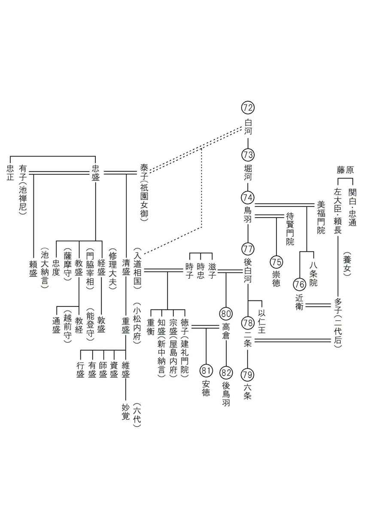

| これで読破！ 平家物語 巻第一 | |
| 三石由起子 | |
| genkosha (2014) | |
完訳 平家物語
百二十句本による
第一句から第十句

はじめに
『平家物語』には膨大な原本がある。専門家が分類すると七、八十種類にもなると言われている。もっとまとめても三十種類くらいにはなるそうだ。
まずは、琵琶法師が語った語り物の性格を持っている本で、十二巻に纏められた物がある。その十二巻の系統も大きく二つに分けられる。はっきり十二巻の物と、十二巻の後に付録の巻、いわゆる灌頂本という建礼門院の物語がついている物である。
現在の私たちが良く読む『平家物語』は、付録物語が付いたもので、琵琶法師の流れから言えば「一方流（＝覚一流）」と呼ばれる物である。この系統に属する琵琶法師は、「○一」という名前を持つ。たとえば小泉八雲の怪談の主人公は、『耳なし「芳一」』であり、『壺坂霊験記』のお里、沢一の「沢一」である。芳一や沢一は一方流の琵琶法師であったと考えられる。
これに対して、きっちりと十二巻で終わるように語る流れを「八坂流（＝城方流）」という。この系統の琵琶法師は「城○」という名前を持つことが多かった。この八坂流に属する本は大変多く、これがさらにまたいくつもに分類される。
一方流は、非常に多く活字になっていて手に入りやすいが、八坂流は活字になることが少なく、一般の読者の手に入ることはなかった。
ここでは別名を「百二十句本」と呼ばれる八坂本を読み進む。「百二十句」というのは、『平家物語』の十二巻を、各巻十章ずつに組み立ててある。平家琵琶では十章と言わず十句という。一章二章と言わずに一句二句というが、この形態は語り物として実際的な組み立てであった。充分に普及している灌頂型に対して、このような『平家物語』が中世には盛んに語られていた。
特色としては、覚一流の系統では巻十二の最後は、付録の前であり、まだ繋がっていくが、百二十句本は平家滅亡できっぱりと終わる。平家の子孫が絶えて終わる。二つの流派の違いは、ほとんどこれだけである。建礼門院の話は八坂流では十二巻目の中にあり、また、一方流でも付録の最期は平家の子孫の処刑であるから、この二つは形式以外に変わるところがない。
琵琶法師は、十二巻できっちり終わる物を「断絶平家」と呼ぶ。『平家物語』の美しさは、滅びの美しさであり、この「それよりしてぞ平家の子孫は絶えにける」という最後の一文に集約されているように思う。
灌頂型は充分に普及しているので、ここでは敢えて「断絶平家型」の百二十句本を読むことにする。
第一句 てん上のやみうち（殿上の闇討）
殿上の闇討 てんじやうのやみうち
第一句の句名は「殿上の闇討」であり「祇園精舎」ではない。巻一を十句仕立てにする場合には「祇園精舎」を独立させず、忠盛の詳伝「殿上の闇討」の中に含ませる。
一
祇園精舎の鐘の声、諸行無常の響有り。沙羅双樹の花の色、盛者必衰の理をあらはす。奢れる者も久しからず、唯春の夜の夢の如し。たけき者も遂には亡びぬ、偏に風の前の塵に同じ。
遠く異朝をとぶらへば、秦の趙高、漢の王莽、梁の周伊【＊朱异】、唐の禄山、これらは皆旧主先王の政にもしたがはず、楽しみをきはめ、諫をも思ひいれず、天下の乱れん事をもさとらずして、民間のうれふる所を知らざりしかば、久しからずして亡びし者どもなり。近く本朝をうかがふに、承平の将門、天慶の純友、康和の義親、平治の信頼、これらは皆おごれる事も、たけき心も、皆とりどりにこそ有りしが、まぢかくは六波羅の入道前太政大臣平朝臣清盛公と申せし人の有様、伝へ聞くこそ心も詞も及ばれね。
百二十句本では、全文が平仮名で書かれている。その読みは「盛者必衰」であり「康和の義親」であり「平治の信頼」である。「じょうしゃひっすい」「こうわのぎしん」「へいじのしんらい」と、平家物語を読み馴れ聞き馴れた者の耳には違和感があるかもしれないが、そう読む。この祇園精舎の書き出しは美しさも極まりないが意味も深淵で、有名な書き出しである。「諸行無常」「盛者必衰」というこの世の滅びの摂理をうたっている。次いで中国と日本の野心家、英雄の実例をあげる。そこから平家物語の主人公である平清盛を導き出すのである。いかにも巨人・清盛が目の前に浮かぶような紹介文である。
二
その先祖を尋ぬれば、桓武天皇第五の皇子、一品式部卿葛原の親王、九代の後胤讃岐守正盛が孫、刑部卿忠盛の朝臣の嫡男なり。かの親王の御子高見の王、無官無位にしてうせ給ひぬ。その御子高望の王のとき、始て平の姓を賜はりて、上総介になり給ひしよりこのかた、たちまちに王氏を出でて人臣につらなる。その子鎮守府の将軍良望、後には常陸大掾国香とあらたむ。国香より正盛まで六代は、諸国の受領たりしかども、殿上の仙籍をばいまだゆるされず。
人物を紹介する時には、通例、先祖からの流れを述べて出自を明らかにする。清盛の先祖は、桓武天皇第五の皇子である一品式部卿葛原の親王である。その九代後に当たる讃岐守正盛の孫であって、刑部卿忠盛の朝臣の嫡男である。式部卿葛原の親王の御子・高見王は、無官無位のまま亡くなり、さらにその御子・高望王の時に、初めて「平」という姓を賜って上総介になった。それ以後は、王族とはいえず、人臣に連なって来た。その子である鎮守府の将軍良望は、後には常陸大掾・国香と名前を変えた。その国香から正盛までの六代は、諸国の受領であった。「しかども、殿上の仙籍をばいまだゆるされず。」清盛も系譜を辿れば、第五十代桓武天皇であるが、「殿上の仙籍をばいまだゆるされず」宮中の清涼殿に上がって奉仕する立場になることはできなかった。
殿上人になれるかなれないかは、およそ人間を二つに分ける大きな基準であった。地下人とは、貴族も庶民も区別なく、殿上人以外の人間をさす。清盛は天皇の血筋ではあったが、代々を過ごして田舎の役人になり、地下人に終わっているという紹介である。
これに続く「殿上の闇討」の書き出しは「しかるに忠盛」と接続詞から始まって行く。つまり「祇園精舎」は「殿上の闇討」の前書きなのである。
三
然るに忠盛、いまだ備前守たりしとき、鳥羽の院の御願得長寿院を造進し、三十三間の御堂を建て、一千一体の御仏を据ゑ奉る。供養は天承元年三月十三日なり。勧賞には闕国を賜はるべきよし仰せ下されける。折節播磨の国のあきたりけるを賜はりける。上皇御感のあまりに内の昇殿をゆるさる。忠盛三十六にて始て昇殿す。
しかし、正盛の子・忠盛（＝清盛の父）が、備前守だった時に鳥羽院のために御願得長寿院を造進して三十三間の御堂を建て、一千一体の御仏を奉った。その御供養は天承元年三月十三日に行なわれたのである。「勧賞」御褒美には闕国（国司や領主のいない国）を下さるという仰せである。そこで、播磨国がちょうど空いていたので頂いたのだった。鳥羽上皇は、感激なさって忠盛に昇殿をお許しになった。忠盛は三十六歳で初めて昇殿したのである。
四
雲の上人これをそみねいきどほり、同じき年の十一月二十三日、五節の豊明の節会の夜、忠盛を闇討にせんとぞ擬せられける。忠盛このよしを伝へ聞きて、「われ右筆の身に有らず、武勇の家にむまれて、いま不慮の難に合はん事、身の為、家の為、心憂かるべし。詮ずる所「身を全うして君につかへよ」といふ本文有り」とて、かねて用意をいたす。
参内の始より、大きなる鞘巻を束帯の下にさし、灯のほのぐらきかたに向かひてこの刀をぬき出だし、鬢にひきあてけるが、よそよりは氷などのやうに見えたり。諸人目をぞすましける。
其上忠盛の郎等、もとは一門たりし平の木工助貞光が孫、進の三郎大夫家房が子に、左兵衛尉家貞といふ者有り。木賊色の狩衣の下に、萠黄威の腹巻を着て、弦袋つけたる太刀わきばさみ、殿上の小庭にかしこまつてぞ侍ひける。貫首以下あやしみをなし、「うつほ柱よりうち、鈴のつなの辺に、布衣の者の侍ふは何者ぞ。まかり出でよ。狼藉なり」と、六位をもつて言はせられたりければ、家貞かしこまつて、「相伝の主備前守殿の今夜闇討にせられ給ふべきよし、伝へ承つて、そのならんやうを見んとて、かくて侍ふ。えこそまかり出づまじう候へ」とて、かしこまつて侍ひければ、これらをよしなしとや思はれけん、その夜の闇討はなかりけり。
しかし、武士であった忠盛が殿上人になったとなると、他の貴族や生え抜きの殿上人たちは腹を立て、その同じ年の十一月二十三日に催される「五節の豊明の節会の夜」に忠盛を闇討ちにしようと企んだのであった。これを事前に察知した忠盛は、
「私は文官ではない。武勇の家に生まれて不慮の難に合えば、我が身のためにも、家の名誉のためにも残念なことになる。「命を全うして君に仕えよ」というではないか。」
と、予め用意をしたのであった。
忠盛が危機を避けるために立てた対策は、宮中に持参してはならないとされる大きな「鞘巻（鍔のない小刀）」を束帯の下に隠して持ち込んだ。そうして、薄暗い中で抜き出すと、あたかも切れ味を試すかのように鬢に当てて見せたのである。それが公家達には氷のように見え、皆、すっかり怯えてしまった。また、忠実な家来・左兵衛尉家貞に武装をさせ、入ってはならない殿上の小庭に潜入させておいた。家貞は、もとは平家一門であった平の木工助貞光の孫であり、進の三郎大夫家房の子である。その家貞が木賊色の狩衣の下に、萠黄威の腹巻鎧を着こみ、弦袋（予備の弓弦を入れる袋）を付けた太刀を脇ばさんで、殿上の小庭に畏まって侍っていた。
宮中の警備に当たる蔵人頭が怪しんで、
「うつほ柱よりうち、鈴のつなの辺に、布衣の者の侍ふは何者ぞ。まかり出でよ。狼藉なり」
と、六位の者を使って咎めさせた。
この「うつほ柱」は、空洞の柱で雨樋のことである。「鈴のつな」は、殿上の間から校書殿に渡した鈴の付いた綱で、蔵人が小舎人を呼ぶために使用したものである。「布衣の者」は、無紋の布の狩衣を着た身分の低い者のことである。
すると家貞は、
｢代々の主君・忠盛さまが今夜闇討ちにお合いになるという噂。成り行きを見ようとここに控えている。出るつもりはない。｣
と、畏まっているのであった。
この二つの出来事に公家たちは恐れをなして、闇討ちは流れるのであった。忠盛は、力で闇討ちを封じたのではなく、事前に威嚇して中止に追い込んだのであるが、意地悪にかけては殿上人の頭は切れる。殿上人たちは別の手で忠盛に恥をかかせようとした。
五
忠盛又御前の召によて舞はれけるを、人々拍子をかへて、伊勢へいじはすがめなりけるとぞはやされける。かけまくもかたじけなくも、この人は柏原の天皇の御すゑとは申しながら、中ごろは都のすまひもうとうとしく、地下にのみ振舞ひなつて、伊勢の国に住国ふかかりければ、その国のうつはものにことよせて、「伊勢へいじ」とぞはやされける。其上忠盛の、目のすがまれたりければ、かやうにははやされけるなり。
忠盛いかにすべきやうなくて、御前をまかり出でられけるが、紫宸殿のうしろにして、かたへの殿上人の見給ふ前にて、主殿司を召して、よこたへさされたりける刀を、あづけおきてぞ出でられける。家貞待ちうけて、「さていかが候ひけるやらん」と申しければ、忠盛、かくとも言はまほしくは思はれけれども、言ひいづるものならば、殿上までも斬りのぼらんずるもののつらたましひにて有る間、「べちの事なし」とぞ答へられける。
御前に召されて舞う際には、人々が拍子と言葉を変えて忠盛を冷やかした。
「伊勢へいじはすがめなりける」
と、はやしたてたのであった。
かけまくもかたじけなくも、桓武天皇の御末裔ではあったが、忠盛は伊勢に住んでいた。東国の出身であるが、源氏が次第に東国に勢力を伸ばして地盤を失い、伊勢、伊賀の辺りの受領となって、そこで勢力を広げたので「伊勢平氏」と呼ばれていた。「眇」は目が細い、あるいは斜視を意味するが、忠盛は「眇」だったと言われる。「へいじ」は「平氏」と「瓶子（＝徳利）」との掛け言葉である。伊勢で作られる徳利は品物が悪かった。「すがめ」は酢を入れる甕のことである。伊勢産の徳利は酢甕にしかならない、との揶揄である。
忠盛は仕方なく宴もまだ終わらぬうちに、こっそりと退散しようとする。紫宸殿の後ろの控室で、殿上人が見る前で主殿司（宮中の雑用をする女官）を呼ぶと、腰に差した刀を預けたままで外に出たのであった。待っていた家貞が、
「どうされましたか。」
と、お訊き申し上げると、忠盛は、事情を説明したいとも思ったのだが、もし言おうものなら、この男は殿上にまでも斬り昇ろうとするに違いないのである。忠盛はただ、
「「べちの事なし」特別なことはなかったよ。」
と、お答えになった。
次の段は話を中断して、忠盛と同様に五節の宴の際に歌でからかわれた例を二つほどあげている。『平家物語』には時々、このように話を中断して前例や似た話に話題を向けることがある。
六
五節には、「白うすやう こぜんじの紙 〔まきあげの筆〕 巴かきたる筆の軸」なんど、さまざまおもしろき事をのみうたひ舞はれしに、中比太宰権帥季仲卿といふ人有り。あまりに色のくろかりければ、見る人「くろ師」とぞ申しける。この人いまだ蔵人頭たりしとき、これも五節に舞はれけるに、人々拍子をかへて、
「あな、くろ、くろ くろき頭かな いかなる人のうるし塗りけん」
とぞはやされける。
五節では、「白うすやう こぜんじの紙 まきあげの筆巴かきたる筆の軸」などと歌い舞うことがあるが、太宰権帥季仲卿という人は、それでからかわれた。あまりに色黒で「くろ師」と呼ばれていたが、この人がまだ蔵人頭だった時、五節で舞うと、公家たちが拍子を変えて「あな、くろ、くろ くろき頭かな いかなる人のうるし塗りけん」と、はやしたそうである。
五節に一番多く歌われたと思われるのが、「白うすやう こぜんじの紙 まきあげの筆巴かきたる筆の軸」である。意味はよくわからないが「白うすやう」は白い薄い上質の鳥の子紙、「こぜんじ」は濃い紫の染め紙だと言われている。「まきあげの筆」は、筆を色糸できりきりと巻きあげた筆のこと。巴の蒔絵紋を書いた筆の軸。と、文房具をずらりと並べでいる。地方の名産を並べたという説もあれば、舞姫の舞う姿をこれに例えたという説もある。とにかく、このような決まり文句が歌われていた。太宰権帥季仲卿は色黒だったので、がらりと拍子を変えて「あな、黒、黒、黒き頭かな いかなる人のうるし塗りけん」と歌われたが、「かみ」には「髪」に蔵人の「頭」という職名を掛けたものである。
七
又、花山の院のさきの太政大臣忠雅公、いまだ十歳と申せしとき、父中納言忠家【＊忠宗】の卿におくれ給ひて、みなしごにておはせしを、故中の御門藤中納言家成の卿、其時はいまだ播磨守たりしとき、婿にとりてはなやかにもてなし給ひければ、これも拍子をかへて、播磨米は 木賊か、むくの葉か 人の綺羅をみがくはとぞはやされける。「上古にはかやうの事共有りしかども、事いでこず。末代いかが有らんずらん、おぼつかなし」とぞ人々申し合はれける。
あるいはまた、花山院忠雅という平家の時代の公家は、まだ十歳の子供であった頃、父・中納言忠家卿に先立たれて孤児となり、当時、播磨守であった家成卿が娘婿に迎えてお世話をしていた。将来有望な若様で大事な婿であった。それを冷やかして「播磨米は木賊か むくの葉か 人の綺羅をみがくは」と歌った。「播磨ではいい米ができるというけれども、米ではない、トクサだろうか、ムクノハだろうか（トクサもムクノハも物を磨くのに使ったものである）人の坊やを一所懸命に磨き立てているなあ」と揶揄したのだった。そして物語はこういう。「昔はこのように五節の時にからかいが行われて、それがどうということもなかった例もある。しかし、今は世の中が乱れて不穏になっているのだ。忠盛のこの事件はいったいどうなるのであろうか。」
八
案にたがはず、五節はてにしかば、殿上人、一同に訴へ申されけるは、「夫雄剣を帯して公宴に列し、兵仗を賜はりて宮中を出入するは、皆格式の礼をまぼる綸命よし有る先規なり。然るに忠盛、或は相伝の郎従と号して、布衣のつはものを殿上の小庭に召しおき、その身は腰の刀をよこたへさして、節会の座につらなる。両条希代いまだきかざる狼藉也。事既に重畳せり、罪科尤のがれがたし。早く御札をけづりて、闕官、停任におこなはるべき」よし一同に訴へ申されけり。
上皇大きにおどろかせ給ひて、忠盛を召して御尋ね有り。陳じ申されけるは、「まづ郎従小庭に祗候の事、まつたく覚悟つかまらず。但、近日あひたくまるるよし、年来の家人伝へ承るによつて、その恥をたすけんが為に、忠盛に知らせずしてひそかに参候の条、力及ばぬ次第なり。つぎに刀の事は、主殿司にあづけ置きをはぬ。召し出だされて、刀の実否によて咎の左右有るべきか」と申す。「然るべき」とて、刀を召し出だし、法皇叡覧有るに、うへは鞘巻の黒く塗りたりけるに、中は木刀に銀薄をぞ押したりける。「当座の恥辱をのがれんが為に、刀を帯するよしあらはすといへども、後日の訴訟を存知して、木刀を帯しける用意のほどこそ神妙なれ。弓箭に携らん者のはかりごとは、尤かうこそ有らまほしけれ。かねて又、郎従小庭に司候の条、かつうは武士の郎従のならひなり。忠盛がとがに有らず。」とて、かへりて叡感にあづかりしうへは、あへて罪科の沙汰もなかりけり。
忠盛が闇討の陰謀をうまく切り抜けてしまったので、公家達は次に歌でからかったのであった。それに対しては、忠盛はさらに見事な申し開きで鳥羽院のお褒めをいただく。これが最後の部分である。
案にたがはず、五節が終わると殿上人一同は、武器を持って宮中に入った忠盛を訴えた。免職の要求である。
「剣を帯びて公宴に列し、随身が武器を携えて宮中で護衛に当たるのは、格式の礼を心得ぬこと甚だしい。勅命を無視するも同然の振舞いである。然るに忠盛は、その代々の家臣だという卑しき武士を殿上の小庭に召し置いて、自分は腰に刀を差したまま節会の座に連なった。前代未聞の狼藉である。罪は幾重にも重なって、罪科は言い訳できるものではない。早く御札を削って、解任して任務を停止させよ」という旨の訴えが起こされた。
御札とは、殿上の簡に記された名前を書いた札である。
鳥羽上皇は大いに驚かれて、忠盛を召して質されると、
「まず家来が小庭に侍していた事は全く存じませんでした。ただ、闇討ち企ての噂がありましたので、年来の忠義者として主人に恥をかかせてはならぬと思って勝手にやったことでしょう。全く監督不行き届きなことでございました。次に刀の事ですが、それは退出の時、主殿司に預けて出ましたので、お召しになってご検分下さい。真の刀であったか、なかったか。」
と、忠盛は陳述したのである。
そうしようと刀を召し出して、法皇がご覧になると、表面の鞘巻を黒く塗って、中は木刀に銀箔を押した物であった。
法皇は、
「当座の恥辱を逃れようとして刀を帯びた振りをしたが、後日に起きる訴訟を予期して木刀にした用意は神妙である。「弓箭に携らん者」武士の思慮としては、こうありたいものだ。又、家来が庭に司候していたのは武士の供の習いである。忠盛の罪ではない。」
と、仰せになってその態度に感服なさったので、罪科の沙汰はなかったのであった。
万事落着である。王朝以来の貴族の権威は、天皇の言葉や規則、前例を踏襲するものであった。その全てに忠盛は逆らったというのが貴族達の訴えだった。それに対して忠盛は、武士としての倫理、忠義の心を法皇に陳述する。王朝の倫理がぐらつき、武士の倫理が通る世の中になりつつあった。
これが「殿上闇討」の話である。簡潔なこの部分にその時代の変化がよく表われている。清盛の父・忠盛の逸話を通して、王朝文化の価値観の揺らぎを示す第一話として非常に示唆に富んだ話になっている。
九
その子どもは諸衛の佐になりて昇殿しけるに、殿上のまじはりを人きらふに及ばず。そのころ忠盛、備前の国よりのぼりたりけるに、鳥羽の院「明石の浦はいかに」と仰せければ、忠盛、
有明の月もあかしの浦風に 波ばかりこそよると見えしか
と申したりければ、御感有りて、やがてこの歌をば金葉集にぞ入れられける。
又そのころ、忠盛、仙洞に最愛の女房有り。かよはけれけるが、あるとき、かの女房の局に、つまに月いだしたりける扇をとり忘れてぞ出でられける。かたへの女房たち「いづくよりの月影ぞや、出で所おぼつかなし」なんど、笑ひ合はれければ、かの女房
雲井より唯漏りきたる月なれば おぼろけにてはいはじとぞおもふ
と詠みたりければ、いとどあさからずぞ思はれける。薩摩守忠度の母これなり。似たるを友とかやの風情にて忠盛も歌に好いたりければ、この女房も優なりけり。
鳥羽院のお褒めにより忠盛の子供たちも昇殿を許されるようになる。それぞれの子が六衛府の長官となって昇殿した。清盛と忠度が左兵衛佐、頼盛が右兵衛佐である。こうなれば貴族達もあだやおろそかにすることはできなくなる。こうして武士は貴族社会の中に入り込み、やがては制圧してその上に立とうとする芽生えが見える。それは貴族に対する武家の勝利であるが、その武家の勝利とは、貴族の仲間入りをして貴族化することであった。これが『平家物語』の課題なのである。
忠盛は、背伸びしたわけではない。忠盛は風雅な性格であった。この話の最後には忠盛の和歌の逸話が二つ述べられる。
忠盛が、備前の国から上京した折、鳥羽院が、
「明石の浦はいかに」
と、仰せられた。忠盛は、
「有明の月もあかしの浦風に
波ばかりこそよると見えしか
（有明の残月も明るくて白昼のような明石の浦に、風に吹かれて波ばかりが寄ると見えました）」
と、申し上げた。
この歌は「あかし」に「明石」と「明し」、「よる」に「夜」と「寄る」とを掛けたものである。
法皇はこの技法にいたく感心されて、この歌を『金葉集』にお入れになった。
また、忠盛はその頃、仙洞（上皇の御所）で女房勤めをする愛人の許に通っていたが、ある時、扇を忘れて帰った。その扇の端には月の絵が描かれていた。女房達が、
「いづくよりの月影ぞや、出で所おぼつかなし（どこから出て来た月かしらね）」
と、冷やかすと、忠盛の愛人は、
「雲井より唯漏りきたる月なれば
おぼろけにてはいはじとぞおもふ
（雲の間から自然に漏れて来た月の光ですから、滅多なことでは申し上げますまい）」
と、「忠盛」と「唯漏り」を掛けて答えたという。
それ以後、忠盛はこの女性をいよいよいとしく思った。この女性が薩摩守忠度の母である。「似たるを友」似た者同士というが、忠盛も和歌を好み、この女房も趣味が深かった。
忠盛は、武芸にも風雅にも秀でた公達であった。平家歌人と総称され、何人もの歌人を生んだ血筋は忠盛のものであった。芸術文化の一時代を築いた平家の将来は、この「殿上の闇討」に象徴されている。
第二句 さんだい上ろく（三台上禄）
三台上禄 さんだいじやうろく
三台とは左大臣、右大臣、太政大臣を言う。「上禄」とは最高の官職を極めることである。清盛が太政大臣に至ったという事実を「三台上禄」という句の名前で表わした。書き出しから固い。いかにも編年体の歴史書の趣きがある。
第一句に見られる七語調を基調とした韻文調の「祇園精舎の鐘の声」や、「殿上の闇討」に見られる生き生きとした語り物の文体など、ここまでにも既にいくつかの文体が見られる。『平家物語』は一口に和漢混淆文と言われているが、一つの文体で全てが貫かれているのではない。和漢混淆文の中にいくつもの異なった文体を抱えるのである。
一
忠盛、刑部卿にいたつて、仁平三年正月十五日歳五十八にてうせ給ひぬ。清盛嫡男たるによて、そのあとを継ぐ。
保元元年七月に宇治の左大臣殿世を乱り給ひしに、安芸守とて御方にて勲功有りしかば、播磨守にうつりて、同じき三年に太宰大弐になり、つぎに平治元年十二月信頼の卿の謀叛のとき、又御方にて先を駆けたりければ、「勲功ひとつに有らず、恩賞これおもかるべき」とて、つぎの年正三位に叙せられ、うちつづき、宰相、衛府督、検非違使の別当、中納言、大納言に経あがりて、左右を経ずして内大臣より太政大臣従一位にあがる。大将に有らねども、兵仗を賜はりて随身を召し具して、牛車、輦車に乗りながら宮中を出で入りぬ。偏に執政の臣の如し。
「太政大臣これ一人の師範として四海に儀形せり。国ををさめ、道を論じ、陰陽をやはらげをさむ。その人に有らずんば則ち闕けよ」といへり。されば、「則闕の官」とも名づけられたり。その人ならでは、けがすべき官ならねども、一天四海をたなごころににぎり給ふうへは、子細に及ばず。
忠盛は、刑部卿となって、仁平三年正月十五日に五十八歳で没した。清盛は嫡男としてその後を継ぐ。保元元年七月の保元の乱で、「宇治の左大臣」藤原頼長が騒乱を起こした時、安芸守として勲功があり、播磨守となったが、同三年には太宰大弐となった。また、平治元年十二月の平治の乱では、藤原信頼が謀叛を起こしたが、この時も先駆けの奮闘を見せたので、「勲功は一つ二つではない。相応の恩賞があってよい」と、翌年には正三位に叙せられた。
それに続いて宰相、衛府督、検非違使の別当、中納言、大納言と出世して、普通は内大臣から右大臣、左大臣、太政大臣と進むところ、左右大臣を経ずに内大臣から一気に太政大臣従一位に上がったのであった。大将でもないのに、
自分の家来を連れ、さらに乗り物に乗って宮中に出入りすることを許されるのである。「兵仗を賜はりて随身を召し具して牛車、輦車に乗りながら宮中を出で入りぬ」まさに摂政関白のような待遇であった。「「太政大臣これ一人の師範として四海に儀形せり。国ををさめ、道を論じ、陰陽をやはらげをさむ。その人に有らずんば則ち闕けよ」といへり」太政大臣は天下の模範になるべき者であり、適当な人物がいなければ太政大臣は置かなくても良いことになっていた。「則闕の官」と言われるゆえんである。
その太政大臣に清盛はなったのである。保元の乱、平治の乱での勲功が大きかったのだが、『平家物語』はそれを詳しくは述べない。その理由は、この物語のテーマが、滅びにあるからである。頂点を極めた平家がどのように滅びて行ったかに重きを置くからである。
物語は、この清盛出世の顛末を不思議な話で説明に代えている。それは、清盛が熊野参詣をする途中に大きな鱸が舟に飛び込んで来たので、それを食べ、一族郎党にも食べさせたからなのだ、という、分かったような分からないような話である。
二
そもそも、平家かやうに繁昌せられける事を、いかにといふに、熊野権現の御利生にてぞ有りける。その故は、清盛いまだ安芸守にておはせしとき、伊勢の国安濃の津より船にて熊野へ参られけるに、大きなる鱸の船に踊入りたりけるを、先達申しけるは、「昔、周の武王の船にこそ白魚は踊入りて候へしか。これをば参るべし」と申されければ、さしもの精進潔斎の道なれども、みづから調味して、わが身食ひ、家の子、朗等にも食はせられける故にや、子孫〔の〕官途も龍の雲にのぼるよりもなほすみやか也。九代のおんしう【＊先蹤】超え給ふこそめでたけれ。
そもそもなぜ平家がこのように繁栄したかといえば、熊野権現の御利益なのである。清盛が安芸守だった時に、伊勢の国の安濃の津から船で熊野に参った。その船に大きな鱸が踊り入ったのを見て、参詣の先導者が、
「昔、周の武王の船に白魚が踊り入ったという故事がございます。これを皆でいただきましょう。」
と言うので、精進潔斎すべき参詣途中の道ではあったが、清盛は自分で調味して、自分でも食べ、一門の者や家来達にも食べさせたのである。その御利益だろうか、子孫の出世も龍が雲に上るように勢いがあった。葛原親王から正盛に渡る九代の先例を越えたのは、めでたいことであった。
三
かくて清盛、仁安三年十一月十一日歳五十一にて病に冒され、たちまちに出家入道す。法名を「浄海」とこそ名のられけれ。そのしるしにや、宿病たちどころに癒えて、天命を全うす。人のしたがひつく事、吹く風の草木をなびかすが如し。世のあまねくあふげる事も、降る雨の国土をうるほすに同じ。「六波羅殿の御一家の公達」とだに言ひてんしかば、肩をならべ、おもてを向かふる者もなし。入道相国の小舅平大納言時忠卿宣ひけるは、「この一門に有らざらん者は人非人たるべし。」とぞ宣ひける。されば、「いかにもしてこの一門にむすぼふれん」とぞしける。衣文のかきやうより始て、烏帽子のためやうにいたるまで、「六波羅様」とだに言ひてんしかば、一天四海の人皆これをまなぶ。
いかなる賢王賢主の御政、摂政関白の御成敗をも、世にあまされたるいたづら者などの、かたはらにてそしりかたぶけ申す事は、常のならひなれども、この禅門の世ざかりのほどは、いささかいるがせにも申す者なし。
その後の清盛は、仁安三年十一月十一日五十一歳の時に病を得て、その平癒祈願のために直ちに出家入道する。法名を「浄海」と名のった。そのお陰で宿病もたちどころに癒えて、天命を全うしたのである。世の人は、吹く風が草木を靡かせるように平家に靡き、土くれが降る雨を仰ぎ見るように平家を仰いだのである。「六波羅殿の御一家の公達」と言えば、肩を並べる者もなく、顔をまともに向ける者さえなかった。栄えに栄えた一門で、入道相国の小舅にあたる平大納言時忠卿の言葉が「この一門に有らざらん者は人非人たるべし」である。
この「人非人」は仏教語で、天、龍、夜叉などの鬼種を意味し、元来は人ではない怪物のことである。その怪物も仏法を聞くために人の形をとるようになる。絵画で描かれる仏の国は、仏の周辺にこういう鬼種を配される。時平の言葉は、「平家の天下において、平家でない者は皆、外周に配される付属品に過ぎない」という意味である。俗に「平家でない者は人にして人にあらず」と解釈するのは誤りである。平家の威勢は風俗にまで影響を与えた。着物の着方、烏帽子の折り曲げ方、それらも「六波羅様」と呼ばれて人々が真似をし、流行の中心となった。
また、世の人というものは、どんな賢王賢主の政治であろうが、摂政関白の行政であろうが、世の多くの落後者達がそれを非難し、謗るのは普通のことである。だが、この清盛の世にあっては、少しの非難さえする者がなかったのである。
四
その故は、入道相国はかりごとに、十四五六ばかりの童部を三百人揃へて、髪を禿にきりまはし、赤き直垂を着せて、召し使はれけるが、京中にみちみちて往反しけり。おのづから、平家の御事をあしきさまに申す者有れば、一人聞き出ださるるほどこそ有れ、三百人に触れまはして、その家に乱れ入り、資材雑具を追捕して、その奴をからめて六波羅へ率てまゐる。されば、目に見、心に知るといへども、言葉にあらはして申す者なし。「六波羅殿の禿」とだに言ひてければ、道をすぐる馬、車も、皆よけてぞとほしける。「禁門を出入すといへども、姓名を尋ねらるるに及ばず。京師の長吏これが為に目をそばむ」と見えたり。
わが身栄華をきはめ給ふのみならず、一門皆繁昌して、嫡子重盛、内大臣左大将。次男宗盛、中納言右大将。三男知盛、三位の中将。四男重衡、蔵人頭。嫡孫維盛、四位の少将。すべて一門の公卿十六人。殿上人四十余人。そのほか諸国の受領、衛府、諸司、都合六十余人なり。世には又人なきとぞ見えたりける。
その理由は、入道相国（＝清盛）の謀があったからである。清盛は、十四、五、六歳ばかりの子供を三百人揃え、髪を禿（かむろ・かぶろ）に切り揃えて、赤い直垂を着せて召し使っていた。それらが京中に溢れて往ったり来たりするのである。そうして平家の悪口を言う者があると一人が聞き出せば、三百人に触れまはして、その家に乱れ入り、家財道具もろともに逮捕して六波羅に連行した。そういうわけで、見えていても、分かっていても、言葉に出して不平を言う者はなかった。「六波羅殿の禿」と言っただけで、道を過ぎる馬や車さえ、皆よけて通した。「禁門を出入すといへども、姓名を尋ねらるるに及ばず。京師の長吏これが為に目をそばむ」邸に出入りするにも誰何されることもなく、役人たちは皆、脇を向いて知らぬふりをした。
清盛は、我が身の栄華を極めたばかりではなく、その一門の者も皆、栄達した。嫡子重盛は内大臣左大将であり、次男宗盛は中納言右大将である。三男知盛は三位の中将となり、四男重衡は蔵人頭である。嫡孫の維盛も四位の少将であった。平家一門、全ての公卿は合計十六人。殿上人は四十人に余った。そのほか諸国の受領、衛府、諸司などは合わせて六十人に余る。これでは、世の中に平家以外の人間がいないかのようである。
五
昔、奈良の帝の御時、神亀五年近衛大将を始おかれてよりこのかた、兄弟左右にあひ並ぶ事、わづかに三四箇度なり。文徳天皇の御時、左に良房、右大臣の左大将。右に良相、大納言右大将。これは閑院の左大将冬嗣公の御子なり。朱雀院の御宇に、左に実頼小野の宮殿。右に師輔九条殿。貞信公の御子なり。後冷泉院の御時、左に教通大二条殿。右に頼宗堀河殿。御堂の関白の御子なり。二条院の御時、左に基房松殿。右に兼実月の輪殿。これは皆摂禄の臣の御子息なり。凡人にとりてはその例なし。殿上のまじはりをだにきらはれし人の子孫にて、禁色雑袍をゆるされ、綾羅錦繍を身にまとひ、大臣の大将になって、兄弟左右にあひ並ぶ事、末代といひながら不思議なりし事共なり。
そのほか入道相国の御娘八人おはしき。皆とりどりにさいはひし給ふ。一人は始は桜町の中納言成範卿の北の方にておはすべかりしが、八歳の年、平治の乱れ以後ひきちがへられ、後には花山の院左大臣殿の御台所にならせ給ひて、公達数多ましましけり。
そもそもこの成範卿を「桜町の中納言」と申しける事は、すぐれて心すき給へる人にて、つねは吉野の山を恋ひつつ、町に桜をうゑ並べ、そのうちに家を建てて住み給ひければ、見る人「桜町」とぞ申しける。桜は咲きて七か日に散るを、名残を惜しみ、天照御神に祈り申されければにや、三七日まで名残有り。君も賢王にてましましければ、神も神徳をかがやかし、花も心有りければ、二十日のよはひをたもちけり。一人はきさきに立たせ給ふ。皇子御誕生有りて皇太子に立ち、位につかせ給ひしかば、院号かうぶらせ給ひて、「建礼門院」とぞ申しける。
一人は六条の摂政殿の北の政所にならせ給ふ。
一人は普賢寺殿の北の方にならせ給ふ。
一人は後白河の法皇に参り給ひて、女御のやうにてまします。これは安芸の厳島の内侍が腹の姫君なり。
一人は冷泉の大納言隆房の卿の北の方にならせ給ふ。
一人は七条の修理大夫信隆の卿にあひ具し給ふ。
そのほか九条の院の雑仕常盤が腹にも一人。これは花山の院殿に参らせ給ひて、上臈女房にて「臈の御方」とぞ申しける。
日本秋津島はわづかに六十六箇国。平家知行の国三十余箇国、すでに半国にこえたり。そのほか荘園田畠いくらといふ数を知らず。綺羅みちみちて堂上花の如し。軒騎群集して、門前市をなす。楊州の金、荊州の珠、呉郡の綾、蜀江の錦、七珍万宝一として闕たる事なし。歌堂舞閣の基、魚龍爵馬のもてあそび、おそらくは帝闕、仙洞も是には過ぎじとぞ見えし。
昔よりいまにいたるまで、源平両氏朝家に召し使はれて、王化にしたがはず朝憲をかろんずる者には、たがひにいましめをくはへしかば、世の乱れもなかりしに、保元に為義斬られ、平治に義朝誅せられて後は、末々の源氏ども或は流され、或はうしなはれて、いまは平家の一類のみ繁昌して、かしらをさし出だす者なし。さればいかならん末の世までもなにごとか有らんとぞ見えし。
昔、聖武天皇の御代である神亀五年に初めて近衛大将の役職を置いたが、それ以来、兄弟が左右の大将として並んだのは、わずか三、四度のことである。文徳天皇の御時、左に藤原良房が右大臣と左大将を兼ね、右に藤原良相が大納言で右大将だった。この兄弟は閑院の左大将・冬嗣公の御子達である。朱雀院の御世には、左に藤原実頼という小野宮殿が立ち、右に藤原師輔という九条殿が立った。この兄弟は関白太政大臣を務めた貞信公の御子達である。後冷泉院の御時には、左に教通大二条殿、右に頼宗堀河殿が立ったが、この兄弟は御堂関白・道長の御子達である。また、二条院の御代では、左に基房松殿、右に兼実月の輪殿が並んだが、こういう方々は皆、摂政家の御子息方であった。凡人にはそのような例はないのである。殿上人に交わることさえ嫌われた人の子孫が、禁じられた色の物を着たり、略式な服装でいることが許されたり、はては、美しい衣装を身に纏って、大臣の大将となって兄弟が左右に並び立つ。このような事は、世は末世とは言いながら不思議な事である。
その他に、入道清盛の御娘は八人おられる。皆それぞれに良縁に片付いた。一人は最初、桜町の中納言成範卿の妻となるはずだったが、八歳の年に平治の乱が起きて、花山院左大臣殿の妻となった。お生みになった公達の数も多い。
そもそもこの成範卿を「桜町の中納言」と言うのは、特別に風流好みの人であり、常時吉野の山を恋うて町に桜を植え並べておられたからである。そのうちにそこに家を建てて住んだので、人が「桜町」と呼ぶようになった。桜は咲いても七日で散るが、名残を惜しんで天照御神に祈願されたとかで、三週間も花が残っているそうだ。君主が賢王だと神も特別な神徳を現わすそうだが、花にも心があって二十日の寿命を保ったそうである。
一人は立后なさった。皇子の御誕生があって皇太子に立たれ、東宮の位にお就きになったので、生母も院号をいただいて「建礼門院」と申し上げる。
一人は六条の摂政殿の正妻となられた。
一人は普賢寺殿の正妻となられた。
一人は後白河法皇に参内されて、女御のようにしておられるが、これは安芸の厳島の内侍に清盛が生ませた姫君である。
一人は冷泉の大納言隆房卿の正妻になられた。
一人は七条の修理大夫信隆卿とご結婚なさった。
そのほか九条院の雑仕をしていた常盤が生んだ娘も一人あるが、これは花山院殿に参内させて、上臈女房としてお仕えし、「臈の御方」と呼ばれている。 日本秋津島は、わずかに六十六ケ国だが、そのうち平家知行の国は三十余ケ国であり、すでに日本全体の半分以上である。そのほかの荘園や田畑はどれだけ持つものやら数を知らず。
美しく着飾った人々が御殿に満ちて花が咲いたような華麗を極めている。車馬が群がり集って、平家の門前は雑踏を極めている。楊州の金、荊州の珠、呉郡の綾、蜀江の錦など、中国産の貴重品、珍品も一つとしてないものはない。歌舞を奏するための大きな建物も、さまざまな遊びも、宮廷や院の御所でさえ、こうまでではあるまいと思われた。
昔から今まで、源平両氏は帝に召し使われて来たのである。勅命や帝のお気持ちを軽んじるようなことがあれば、両氏はお互いに戒めて助け合えば世の乱れもなかっただろうに、保元の乱では源為義が斬られ、平治の乱ではまた、源義朝が誅せられてしまった。それ以後の末々の源氏は、流されたり、殺されたりして今は、平家の一族だけが繁昌している。それについて何か言おうという者さえない。この末世に何か起きぬ筈はなかろう。
第三句 二だいきさき（二代后）
二代后 にだいきさき
一
鳥羽の院の御晏駕の後、兵革うちつづきて、死罪、流刑、解官、停任おこなはれて、海内もしづかならず。世間もいまだ落居せず。なかんづく永暦、応保のころより、院の近習者をば内より御いましめ有り、内の近習をば院よりいましめらるる間、上下おそれをののいて、やすき心もなし。唯深淵にのぞんで薄氷をふむが如し。
主上、上皇、父子の御間になにごとの御へだてか有るべきなれども、思ひのほかの事共有りけり。主上、院の仰せをつねは申しかへさせましましける中にも、人耳目をおどろかし、世もつて大きにかたぶけ申す事有りけり。
そのころ故近衛の院の后、太皇太后宮と申せしは、大炊の御門の右大臣公能の御娘なり。先帝におくれ奉らせ給ひて後は、近衛河原の御所にぞうつり住ませ給ひける。長寛のころは御年二十二三にもやならせましましけん。御さかりも過ぎさせ給ひたり。
されども天下第一の美人の聞こえましましければ、主上色に染みたる御心して、ひそかに高力士にみことのりして、この大宮へひきもとめしむるに及んで、御艶書有り。大宮あへて聞こしめしもいれざりけり。されどもこの事ほにあらはれて、后御入内有るべきよし、右大臣家に宣旨を下さる。この事天下においてことなる勝事なれば、公卿僉議あって、おのおの意見を申さる。
第七十四代天皇であった鳥羽院の崩御の後、戦乱が続き、その始末のための死罪、流刑、解官、停任などが行なわれて国内が不穏であった。世情もまだ落ち着かない。特に永暦、応保の頃から院の近習者に裏切りがあって、院が戒められるというので、お仕えする上下の者たちは安穏としてはいられなかった。皆が皆、深淵を覗き見て、薄氷を踏む思いである。
元から上手くはなかった二条天皇（７８）と後白河院（７７）父子の仲は、はっきりと険悪になった。二条天皇は院の仰せに常に反発したが、その中でも、世間を驚かせ、国を傾けるような大事が起きたのである。
その頃、先帝・故近衛天皇（７６）の后・多子という方は、大炊御門家の右大臣・公能の御娘であった。先帝に先立たれてからは、近衛河原の御所に住んでおられた。長寛の頃には年齢も二十二、三歳にもおなりで御盛りも過ぎておられたが、天下第一の美人との評判が高かった。二条天皇はいたく御執心であらせられ、御自分の後宮にとお望みになって艶書を送った。それを無視されると、実父・右大臣公能に入内させよとの宣旨を下す。本朝にはこんなことは例がないので、公卿達は会議を開いてそれぞれの意見を述べた。
二
まづ、異朝の先蹤を尋ぬるに、則天皇后は唐の太宗の后、高宗皇帝の継母なり。太宗崩御の後皇后尼になりて、盛興寺といふ寺にこもり給へり。高宗「ねがはくは宮室にかへり、政をたすけ給へ」とて、御使かさねて五たび来たるといへども、あへてしたがはず。帝、盛興寺に臨幸なつて、「朕まつたくわたくしの心ざしをとげんとには有らず。先帝太宗の世をながからしめ給へとなり」。皇后宣はく「われ太宗の菩提をとぶらはんが為に、すでに釈門に入りぬ。ふたたび塵屋にかへるべからず」とて、かく然としてひるがへさず。ここに高宗の近臣たち、よこしまにとり奉る如くにして、皇后を内裏へ入れ奉る。その後皇后と高宗と二人、政をめでたうし給ひしかば、「二化の御宇」とぞ申しける。かくて帝世ををさめ給ふ事三十三年。国富み、民ゆたかなり 高宗崩御の後、皇后女帝として世をうけとり、位をつぎ給へり 皇后世をあらためて、年号を神功元年と号す。この人は周王の孫なる故に大周則天太上皇帝とぞ聞こえし。その後中宗皇帝に世をゆづり給ふ。中宗世をあらためて年号を神龍元年と号す 在位七年 これはわが朝の文武天皇にあたり給へり。
「されどもそれは異国の先規たるうへ、別段の事なり。本朝には神武天皇よりこのかた、人皇七十余代にいたるまで、いまだ二代の后に立ち給ふ事、その例を開かず」と諸卿一同に申させ給へども、主上仰せなりけるは、「天子に父母なし。われ十善の戒功によて万乗の宝位をたもつ。などかこれほどの事叡慮にまかせざるべき」とて、すでに御入内の日宣下せられけるうへは、力及ばせ給はず。
先ずは中国の先例を調べると、則天皇后の例がある。唐の太宗の后で高宗皇帝の継母である。太宗の崩御の後に皇后は尼になり、盛興寺という寺に籠っていた。そこへ高宗が「宮廷に戻って政務を助けて欲しい」という使いを度々寄こしたが応じなかった。高帝は御自分で盛興寺にお越しになり、「私は自分の欲望を遂げようとしているのではない。先帝・太宗のお作りになった世を長からしめようと思ってのことだ。」とおっしゃった。皇后は、「私は亡き太宗の後世を弔おうと既に出家したのです。再び俗世には戻りません。」と、断乎として意志を曲げなかった。そこで高宗の近臣たちが策謀して皇后を内裏へ入れてしまったのである。その後は、この皇后と高宗が二人で力を合わせて素晴らしい政治を行なったので「二化の御宇」とまで呼ばれた。こうして世を治めること三十三年。国は富み、民は豊かになって、高宗が崩御した後には、皇后が女帝なって位を継ぎ、皇后の世として改めたのである。年号を神功元年とした。この人は周王の孫だったので、大周則天太上皇帝と呼ばれたのである。その後、中宗皇帝に世をお譲りになった。中宗は、年号を神龍元年と改めた。在位は七年で、これはわが朝の文武天皇の御代に当たる。
「だが、それは異国の先例であって、我が国とは事情が違う。我が国は神武天皇以来、七十余代に至るまで、いまだかつて二代の天皇の后になったという例はない。」
と、諸卿は一同に反対した。
だが、帝は、
「天子に父母なし。われ十善の戒功によて万乗の宝位をたもつ。などかこれほどの事叡慮にまかせざるべき」
と、おっしゃった。
十善とは殺生、偸盗、邪淫、妄語、両舌、悪口、綺語、貪欲、瞋恚（激しく怒る）、邪見の十悪を犯さぬ「十善戒」のことである。仏教では、それを成し遂げた者だけが人間界で王に生まれるとされていた。帝は｢天子に父母なし。｣と、一同の反対を押し切って強引に后に迎えたのであった。
すでに御入内の日の宣下があったので、いかんともし難かった。
三
大宮かくと聞こしめされけるより、御涙にむせばせおはします。先帝におくれまゐらせにし久寿の秋の始、同じ草葉の露とも消え、出家をもし、世をものがれたりせば、いまかかる憂き事は聞かざらまし」とぞ、御なげき有りける。父の大臣こしらへ申させ給ひけるは、「『世にしたがはざるをもつて狂人とす』と見えたり。すでに詔命を下さるるうへは、子細を申すに所なし。唯すみやかに御入内し給へ もし皇子御誕生有らば、君も国母と言はれ、愚老も外祖とあふがるべき瑞相にてもや候ふらん。偏に愚老をたすけさせおはします、御孝行のいたりなるべし」とこしらへ申させ給へども、なほ御返事もなかりけり。大宮そのころなにとなき御手ならひのついでに、
うきふしに沈みもやらで河竹の 世にためしなき名をやながさん
世にはなにとして漏れたりけん、やさしき御事にぞ申しける。
すでに御入内の日にもなりしかば、父の大臣、供奉の上達部、出車の儀式なんど、心の如く仕立てまゐらせ給ひける。大宮もの憂き御出でたちなれば、とくも出で給はず、はるかに夜ふけ、小夜も半ばになつて後、御車にたすけ乗せられさせ給ひけり。ことに色ある御衣をば召されず、しろき御衣をぞ召されける。御入内の後は麗景殿にぞましましける。ひたそらあさまつりごとをすすめ申させ給ふ御さまなり。
彼紫宸殿の皇居には、賢聖の障子を立てられたり。伊尹・第伍倫・虞世南、太公望・角里先生・李勣・思摩。手長、足長、馬形の障子。鬼の間、尾張守小野の道風が「七廻賢聖の障子」と書きたりしも理とぞ見えし。かの清涼殿の絵図の御障子には、昔金岡が書きたりし遠山のありあけの月も有りとかや。故院のいまだ幼少にてましましけるそのかみ、なにとなき御手ならひに、ありあけの月の出でたるを書きくもらかさせ給ひたりしが、有りしながらにすこしもたがはぬを御覧じ、先帝の昔もや御恋ひしくおぼしめされけん、
思ひきやうき身ながらにめぐりきて おなじ雲井の月を見んとは
世には又哀なる御事にぞ申しける。その間の御仲ゐ、言ひ知らず哀にやさしき事共なり。
大宮・多子は、これをお聞きになって出家をしなかった後悔の涙にむせんでおられた。先帝に先立たれたあの秋の初めに、同じ草葉の露となって消え、あるいは出家をして俗世を逃れていれば、今更このような憂き目を見ることもなかったのだと、ただお嘆きである。
父大臣が一所懸命に、
「『世にしたがはざるをもつて狂人とす』世の流れに従わないのを狂人というのです。すでに詔命が下ったからには何を申しても始まりません。ただ、速やかに入内なさいませ。もし、皇子の御誕生があれば、国母と言われる立場にもなるのですよ。それ、この私も外祖父と尊敬される瑞相があるのでしょう。この愚かな父を助けると思って、孝行の至りだと観念しなさい。」
と、申しあげるが御返事もなさらない。
大宮・多子はその頃の御手習いの序に、
うきふしに沈みもやらで河竹の
世にためしなき名をやながさん
（川辺の竹が沈むこともできず水に身を晒すように、世に例もない憂き名を流すのでしょうね）
と、お書きになったらしい。
この歌は「うき節に沈みもやらで河竹の」までが、「世」を導く序詞である。「身を晒す竹のように、近衛天皇崩御で出家しなかった自分は、今こうして醜聞を流すのだ」という意味である。
これが、どうして世の中に漏れ聞こえたのか、優雅なことである。
すでに入内の日となると、父大臣は、供奉の上達部や出車の儀式などを意のままに仕立てて参内する。大宮・多子がもの憂く悲しいご様子なので、そう早くも御出発にはならなかった。はるかに夜が更けて、小夜も半ばになってから、御車に助け乗せられたのである。特別に色の付いた御衣をお召しになることもなく、白い着物をお召しであった。御入内の後は、麗景殿にお住まいになる。一途にお勤めに励むご様子であった。 紫宸殿の皇居には、賢聖が描かれた障子が立てられていた。伊尹・第伍倫・虞世南、太公望・角里先生・李勣・思摩。手長、足長、馬形の障子。鬼の間、尾張守小野の道風が「七廻賢聖の障子」と書いておいたのも道理と思われた。かの清涼殿の絵図の御障子には、昔、金岡が書き置いた遠山の有明の月もあるということだ。故院がまだ幼少であられた昔、何と言う事のない御手習に、有明の月が出たのをお描きになったものである。それが昔のままで少しも違わないのを御覧になると、先帝の昔を恋しく思われたのだろうか、
思ひきやうき身ながらにめぐりきて
おなじ雲井の月を見んとは
（もう一度、宮中で同じ月を見ようとは思わなかったことです）
と、おっしゃったらしい。
世にまたとない哀れなことだと申し上げる。その間のお二人の仲は、言いようもなく優雅なことであった。
多子は出家しなかった後悔を持って、泣く泣く入内して麗景殿に住む。実父・公能の説得は「世にしたがはざるをもつて狂人とす」であった。こうして藤原多子は、近衛天皇と二条天皇の皇后となったので「二代后」と呼ばれる。
実父・公能の姉が左大臣頼長の妻であり、頼長には子供がなかったので、多子は生後間もなく頼長の養女となっていた。近衛天皇には１１５０年に十一歳で入内したが（近衛天皇は十二歳）、頼長の異母兄である関白忠通は、自分の養女を近衛帝の中宮に冊立する。実は、忠通が養女を入内させることを聞いた頼長が、策略の末に多子を先に皇后としたのだった。これ以後、忠通と頼長兄弟の仲は修復不可能な間柄となる。
近衛帝が１１５５年に崩御すると、多子は皇太后となり、ついで太皇太后となって近衛河原の御所に住み続けた。五歳年下の二条天皇の后となったのは二十一歳の時だったと言われている。その二条帝も二十三歳で崩御し、多子は、ついに子供を持つことがなかった。
第四句 がくうちろん（額打論）
額打論 がくうちろん
一
さるほどに、永万元年の春の始より主上御不予のよし聞こえさせ給ひしが、夏の始になりしかば、ことのほかにおもらせ給ふ。これによて、大蔵大輔壱岐の兼盛が娘の腹に、今上一の宮の二歳にならせ給ふを、「太子に立てまつらせ給ふべし」と聞こえしほどに、同じき六月二十五日、にはかに親王の宣旨を下され給ふ。やがてその夜受禅有りしかば、天下なにとなうあわてたるやうなり。其時有識の人々申し合はれけるは、「本朝童帝の例を尋ぬるに清和天皇九歳にして文徳天皇の御ゆづりをうけさせ給ふ。これはかの周公旦の、成王にかはりて、南面にして一日万機の政ををさめ給ひしに准へて、外祖忠仁公幼主を扶持し給ふ。これぞ摂政の始なる。鳥羽の院五歳。近衛の院三歳。これをこそ『いつしかなり』と申せしに、これは二歳にならせ給ふ。先例なき。ものいそがはしともおろかなり。」
七月二十七日、上皇遂に崩御なりぬ。御年二十三、つぼめる花の散るが如し。玉のすだれ、錦の帳のうち、御涙にむせばせおはします。御位を去らせ給うて、はつかに三十余日ぞ有りける。やがてその夜、香隆寺のうしとら、蓮台野の奥、船岡山にをさめ奉る。少納言入道の子息澄憲、御葬送を見奉り給ひて、泣く泣くかうぞ申されける。
つねに見し君がみゆきをけふとへば かへらぬたびと聞くぞ悲しき
大宮、このたびもさまでの御さいはひもわたらせ給はず。この君にさへおくれ奉り給ひしかば、やがて御出家有りて、近衛河原の御所へうつしまゐらせ給ひける。
そうこうするうちに、永万元年の春の始めから二条天皇がご病気になられ、夏の始めにはそれが重篤な状態になった。そこで大蔵大輔壱岐・兼盛の娘が生み奉った今上天皇の第一皇子で二歳におなりの方を「皇太子にお立て申し上げよう」ということになり、同年六月二十五日に、俄かな親王宣旨があった。そのままその夜に御位を譲り受けられたので、世は何となく慌ただしい雰囲気になった。当時の宮中の故実や儀礼に詳しい人々は、
「我が国での幼帝の例を調べてみると、清和天皇が九歳で文徳天皇の御譲位をお受けになった。これは周の文王の子・公旦が成王に代わって国を治められた故事に准え、外祖父にあたる忠仁公（＝藤原義房）が幼帝をお扶けした。これが摂政の始めである。鳥羽院は五歳で近衛院は三歳であった。この状況は、まだ時期ではないと判断された。だが、今回は二歳でいらっしゃる。性急に過ぎるだろう。」
と、言うのである。
七月二十七日に遂に崩御された。御年二十三歳であり、まだ蕾の花が散ってしまったようである。玉の簾、錦の帳の内は、誰もが涙にむせんでいらっしゃる。御譲位になってからわずか三十日余りのことであった。そのままその夜、香隆寺の東北で蓮台野の奥にある船岡山にお納め申し上げる。少納言入道の子息・澄憲は、御葬送を御覧になって、泣く泣くこのように言われた。
つねに見し君がみゆきをけふとへば
かへらぬたびと聞くぞ悲しき
（いつも拝見しておりました帝の行幸を、いつお帰りかと訊く今日は、帰らぬ旅だと聞いて悲しいことです）
大宮・多子は、今回もそれほどの御寵愛を受ける期間もなかったのである。この帝にまで先立たれて直ちに出家されて、近衛河原の御所にお移りになった。
二
御葬送の夜、延暦寺、興福寺の大衆ども額打論といふ事をしいだして、たがひに狼藉に及ぶ。一天の君崩御なりて後、御墓所へわたし奉るときの作法、南北二京の大衆ことごとく供奉して、御墓所のまはりにわが寺々の額を打つ事有り。まづ聖武天皇の御願所、あらそふべき寺なければとて、「東大寺」の額を打つ。つぎに淡海公の御願とて、「興福寺」の額を打つ。北京には興福寺とむかひて「延暦寺」の額を打つ。つぎに天武天皇の御願、あらそふべきやうなし、智証大師の草創とて、「園城寺」の額を打つ。そのほか末寺末寺の額ども打ちならぶる。然るを、山門の大衆いかが思ひけん、先例をそむきて東大寺のつぎ、興福寺の上に、延暦寺の額を打つ間、南都の大衆、「とやせまし、かくやせまし」と僉議する所に、興福寺の西金堂の衆、観音房、勢至房とて大悪僧二人有り。観音房は黒糸威の腹巻に白柄の大長刀のさやはづし、勢至房は萠黄威の腹巻に、黒漆の大太刀もつて、二人づんと走り出て、延暦寺の額を切って落し、散々に打ち破り、
うれしや、鳴るは滝の水 日は照れどもたえず、とうたへや
とはやしつつ、南都の衆都の中へぞ入りにける。帝かくれさせ給ひて後は、心なき草木にいたるまでうれへたる色にてこそ有るべきに、この騒動のあさましさに、たかきもいやしきも、肝魂をうしなつて四方へ皆退散す。山門の大衆、狼藉をいたさば手むかひすべき所に、心ふかうねらふかたもや有りけん、一詞も出ださざりけり。
同じき二十九日の午剋ばかり、「山門の大衆おびたたしく下洛す」と聞こえしかば、武士、検非違使西坂本に行きむかつて防ぎけれども、事ともせず、押し破り乱入す。又、何者の申し出だしけるやらん、「一院、山門の大衆に仰せ、平家を追討せらるべき」と聞こえしかば、「軍兵、内裏に参じて、四方の陣頭警固すべし」とて、一類、皆六波羅へ馳集る。小松殿、そのころは中納言右大将にてましましけるが、「当時、なにごとによてさる事有るべき」としづめられけれども、上下ののじりさわぐ事おびたたし。法皇もいそぎ六波羅へ御幸なる。山門の大衆、六波羅へは寄せずして、そぞろなる清水寺へ押し寄せて、仏閣、僧房、一宇ものこさず皆焼きはらふ。これは去んぬる御葬送の夜の会稽の恥をきよめんが為とぞ聞こえける。清水寺は興福寺の末寺たるによてなり。
御葬送の夜、延暦寺、興福寺の大衆（＝僧）どもが、額打論というものをし出して、互いに狼藉に及んだ。
額打論は、寺の名を書いた額を懸ける順序を巡る争論である。
帝が崩御後、御墓所へお渡りになる時の作法は、南北二京（＝奈良と京都）の僧達がことごとく供奉して行き、御墓所の廻りに自分の寺の額を打ち立てるのである。まず聖武天皇の御願所では他に争える寺もないので「東大寺」の額を打つ。つぎに淡海公（＝藤原不比等）の御願所には当然、「興福寺」の額を打つ。北京は興福寺と向かい合わせに「延暦寺」の額を打つ。つぎに天武天皇の御願所は、これもまた争うまでもなく、智証大師（＝第五代天台座主）の草創であるから「園城寺」の額を打つ。その他の末寺末寺の額などが打ちつけられて並ぶのである。そうした慣例がありながら、山門の僧が何を思ったのか、先例に背いて東大寺の次である興福寺の額の上に、延暦寺の額を打ったのである。南都の僧達が、
「そうではない。」
「こうするのだ。」
などと詮議していると、大悪僧二人が登場した。
興福寺の西金堂の僧・観音房と勢至房である。観音房は黒糸威の腹巻鎧に白柄の大長刀の鞘を外した姿であり、勢至房は萠黄威の腹巻鎧に黒漆の大太刀を持っていた。その二人が「づん」と走り出て来て、延暦寺の額を切って落としたかと思うと、それを散々に打ち破って、
「嬉しや、鳴るは滝の水 日は照れどもたえず、と歌へや」
と、囃し立てながら南都の僧達の中に入って行ったのである。
帝がお隠れになったからには、心を持たぬ草木に至るまで憂いてあるべき時に、この騒動の浅ましさは何たることか。人々は貴賎を問わず肝を潰して、四方に散り散りに退散した。山門の僧達は、このような狼藉は手向かいすべき所であったが、思慮を深くして何か企むことがあったのか、一言も言わなかった。
二人の悪僧が囃した「嬉しや、鳴るは滝の水 日は照れどもたえず、と歌へや」は、『梁塵秘抄』にある延年舞いの歌詞である。諸大寺では、法会の後の余興に広く歌われたと言われている。
同月二十九日の正午頃、
「山門の大衆（＝僧達）が大勢で下りて来ました。」
との報告に、武士や検非違使が西坂本に行って防いだが、あっけなく突破されて、京の中に押し破って乱入して来たのであった。
また、誰が言い出したのか、
「一院（＝後白河上皇）が、山門の大衆に仰せつけられた。平家を追討せよとの御下命である。」
と、言っているので、
「軍兵は内裏に参上して、四方の陣頭警固すべし」
ということになって、一門は皆、六波羅へ馳せ集った。
小松殿（＝清盛の長子・重盛）は、当時、中納言右大将でいらっしゃったが、
「今、そのようなことがある筈がない。」
と、鎮静なさろうとしたが、上から下まで皆が、大騒ぎで騒いでいる。
法皇も急いで六波羅に御幸された。山門の大衆たちは六波羅には寄せては来ず、人気のない清水寺に押し寄せて、仏閣や僧房などを一棟も残さずに皆焼き払ったのである。
これは去る御葬送の夜の会稽の恥を清めようと、額打論の仕返しなのであったそうだ。清水寺は興福寺の末寺だったからである。
三
清水寺焼けたりけるあした、落書有り。「観音火坑変成池はいかに」と札を書きて、大門の前に立てたりければ、次の日又、「歴劫不思議力及ばず」とかへしの札をぞ立てたりける。
衆徒帰りのぼりければ、一院も六波羅より還御なる。重盛の卿ばかりこそ御おくりに参られけれ。父の卿は参られず。なほも用心の為とぞ聞こえし。重盛の卿御おくりより帰られたりければ、父の卿宣ひけるは、「さても一院の御幸こそ大きにおそれおぼゆれ。かけてもおぼしめしより仰せらるるむねの有ればこそ、かうは聞こゆらめ。それにもうちとけ給ふべからず。」と宣へば、小松殿「此事ゆめゆめ御詞にも出させ給ふべからず。なかなか人に心づけ顔に、あしき御事なり。それにつけても、叡慮にそむかせ給はで、いよいよ人に御なさけをほどこさせ給はば、神明三宝の加護有るべし。さあらんにとりては、御身のおそれ候ふまじ」とて起たれければ、「あはれ、重盛はゆゆしうもおほやうなる者かな」と、父の卿も宣ひける、
一院還御の後、御前にうとからぬ近習たち数多侍はれけるに、仰せられけるは、「さても不思議の事を申し出だしたるものかな。おぼしめしよらぬものを」と宣ひければ、院中のきり者に西光法師といふ者有り。「『天に口なし。人をもつて言はせよ』と申す事候。平家もつてのほかに過分に候へば、天の御告げにてもや候ふらん」とぞ申しける。人々、「この事よしなし。『壁に耳有り』おそろし、おそろし」とぞ申し合はれける。
さるほどにその年も天下諒闇なりければ、御禊大嘗会もおこなはれず。建春門院そのころはいまだ「東の御方」と申しける、その御腹に一院の宮おはしけり。同じき十二月二十四日、にはかに親王の宣旨をかうぶらせ給ふ。
あくれば、改元有りて仁安と号す。「ことしは大嘗会有るべき」とて、そのいとなみ有り。
同じく十月八日、去年親王の宣旨をかうぶり給ひし皇子、東三条にて春宮に立たせ給ふ。春宮は御叔父、六歳。主上は御甥、三歳。昭穆にあひかなはず。但寛和二年に、一条の院五歳、三条の院十一歳にて春宮に立たせ給ふ。先例なきに有らず。
主上わづかに二歳にて御ゆづりをうけさせ給ひて、五歳と申せし二月十九日、春宮践祚有りしかば、位をすべりて「新院」とぞ申しける。いまだ御元服もなくして「太上天皇」の尊号有り。漢家本朝これや始なるらん。
同じき二十日、新帝大極殿にして御即位有り。この君の位につかせ給ふは、いよいよ平家の栄華とぞ見えし。国母建春門院と申すも平家の一門にておはしけるうへ、とりわき入道相国の北の方八条の二位殿は、女院の御姉なり。平大納言時忠卿と申すも、女院の御弟【＊御兄】にておはしければ、内外につけて執権の臣とぞ見えし。玄宗皇帝に楊貴妃がさいはひせしとき、楊国忠がさかえしが如し。世のおぼえ、時の聞こえ、めでたかりき。入道相国、天下の大小事を宣ひ合はせられければ、時の人、「平関白」とぞ申しける。
清水寺が焼失した明くる朝、落書があった。
「観音火坑変成池はいかに」
と、札に書いて大門の前に立ててあった。
これは、「観音を本尊とする清水寺が焼けてしまったのはどういうことか。」と皮肉ったものである。『法華経』普門品にある「仮使興害意、推落大火坑、念彼観音力、火坑変成池」を引いたもので、「観音の力を念誦れば猛火の燃えたぎる穴も変じて池となり、その難を逃れる」という教えに掛けての皮肉であった。
すると、次の日には、
「歴劫不思議力及ばず」
と、それに返答する札が立てられていた。
これは「観音の御利生は永遠であり、人智では測れないものだから、この度の焼失は人の力ではどうすることもできないものだ」という弁明であった。これも同じく普門品の「汝聴観音行、善応諸方所、弘誓深如海、歴劫不思議」から引いたものである。
僧達が山に帰り登ったので、後白河上皇も六波羅から還御なさった。重盛卿だけがお送りする。父・清盛はそうなさらなかった。ご用心なさったらしいとのことである。重盛卿がお帰りになると、父・清盛卿は、
「それにしても院の御幸はまことに畏れ多いことだ。それにしても、以前から平家を懲らしめてやろうという御考えを口外しておられればこそ、このような噂も立ったのだ。お前も油断するでない。」
と、おっしゃった。
小松殿（＝重盛）は、
「そのような事を、お口になさるべきではございません。人の注意を引くことになってかえって悪いことになります。それにつけても、叡慮にお背きにならずに人々に情けを施せば、きっと神明三宝のご加護があることでしょう。ご加護がある以上は、御身の御心配には及びません。」
と、お起ちになったので、
「ああ、重盛は気味の悪いほどに落ち着いていることだな。」
と、父・清盛卿もおっしゃったそうだ。
院が還御されてから、御前に親しい近習達が多く伺候している時に、
「しかし不思議な噂が立ったものだ。平家追討など考えてもみなかったものを。」
と、仰せられると、切れ者と言われる西光法師が、
「『天に口なし。人をもつて言はせよ（＝天の神には意思はあっても口や言葉がない。その意思は人の口を借りて出て来るのである）』と申します。平家の態度はもっての外で、分を過ぎております。これはきっと天のお告げかもしれません。」
と、申し上げた。人々は、
「つまらぬことを。『壁に耳有り』おそろし、おそろし」
と、申し合わせた。
そうこうするうちに、その年も諒闇（天皇が亡くなった年）だったので、御禊大嘗会も行なわれなかった。
後白河上皇の女御で建春門院と仰る方（＝清盛の妻・時子の妹）は、その頃はまだ「東の御方」と呼ばれていたが、その方がお生み奉った院の宮がいらっしゃる。その宮が同年の十二月二十四日、俄かに親王の宣旨を受けたのである。明けて年号が改まり仁安と号された。
「今年は大嘗会がある」
と、その行事が行なわれた。
その年の十月八日、前の年に親王の宣旨をお受けになったこの皇子（＝後の高倉天皇）が、東三条で皇太子にお立ちになる。皇太子は御叔父で六歳、帝（＝六条天皇）は御甥で三歳である。「昭穆にあひかなはず。」父子長幼の序には適っていないが、寛和二年に一条院は五歳でご即位となり、三条院は十一歳で皇太子となったので、先例がない訳でもない。 帝（＝六条天皇）はわずか二歳で御譲位を受けられ、五歳の二月十九日に皇太子に御譲位になったので、位を下りられて「新院」と申し上げる。まだ御元服もなさらぬうちに「太上天皇」の尊号を受けられたのである。これは中国にも我が国にも初めてのことだろう。
同じ二十日、新帝（＝高倉天皇）が大極殿で御即位あそばされた。この君が位にお就きになったことは、いよいよ平家の栄華と見える。国母となられた建春門院と呼ばれる方も平家の一門でいらっしゃる上に、入道相国・清盛の正妻である二位殿（＝時子）は、女院（＝滋子）の御姉である。平大納言時忠卿は、女院の御弟【＊御兄】でいらっしゃるから、内外の御政務は平家一門が執権なさるのであろう。
玄宗皇帝が楊貴妃を寵愛した時に、楊国忠の権勢が旺盛だったようなものだ。世の評判も、時の名誉も、この上なくめでたいことであった。入道相国は、天下の大小事について全ての御相談相手となられたので、時の人は清盛を「平関白」と呼んだのである。
これは、強い権勢で傍若無人に我が意を通すことを揶揄した呼び名である。
この場面での清盛と重盛の会話には、それぞれの人柄がよく表れている。清盛の言葉に重盛は、たとえそうだとしても口に出してはいけないと、あくまでも沈着冷静に事を収めようとする。『平家物語』は重盛をそういう人柄として描こうとしている。
後白河法皇と西光法師との間でも会話がある。後白河院は、全く迷惑なデマが立ったものだ、自分には身に覚えがないという。それに対して「きり者（＝切り者、切り人）」といわれる西光法師という怪物は、デマが立つのは天の意思だという。平家が身の程知らずの栄華を極めているので立つべくして立ったデマだと言うのである。物騒な発言であった。
譲位と即位が繰り返されて分かりにくいので整理しておく。二条天皇が亡くなり、まだ二歳の六条天皇が立った。皇太子が必要になって後の高倉天皇がその候補となる。それが六条天皇の後を継いで、平家全盛の時代が訪れるのである。
繰り返して説明する。毎年十一月二十三日には新嘗会が行われる。天皇が代変わりをすると、その最初の新嘗会を大嘗会と呼ぶ。しかし、前の天皇が亡くなって世間が喪に服しているような場合（天下諒闇）には大嘗会も、それに関する行事も行われない。後白河法皇には大勢の女性がいたが、その中でも御寵愛が深かったのが建春門院滋子という方である。これは平時信の娘であり、清盛の妻・二位尼時子の妹に当たる。彼女が男の子を生み、それが親王となる。天皇候補の第一段階である。そこで年号が変わり仁安となる。その年には大嘗会が行われる支度ができる。この親王が皇太子となったのは、後白河院と平家との協力体制がレールに乗ったことを意味している。わずか二歳で即位した六条天皇は五歳で早くも降ろされて、皇太子高倉が天皇になった。五歳の六条帝は「新院」「新上皇」である。平家の世はゆるぎないものになっていく。建春門院は平家であり、清盛の義妹であり、「平家にあらざる者は人非人なり」と言った時忠卿は兄である。楊貴妃の一族である楊国忠は、権力を手中にして国を乱す元をつくった。それさえも思い合わされる世になったのであった。
第五句 ぎわう（義王）
義王 ぎわう
一
入道相国かやうに天下をたなごころににぎり給ふ間、世のそしりをもはばかり給はず、不思議の事をのみし給へり。たとへば、そのころ京中に白拍子の上手、義王、義女とておととい有り。これはとぢといふ白拍子の娘なり。姉の義王を入道最愛せられければ、妹の義女をも世の人もてなす事かぎりなし。母とぢにもよき家つくりてとらせ、毎月百石百貫をぞおくられける。家のうち富貴にして楽しき事かぎりなし。
入道相国がこのように天下を掌中にしている間は、世の非難も憚らずに不思議な言動をしておられた。たとえば、その頃の京には白拍子の名人で義王と義女という姉妹があった。これは「とぢ」と言う名の白拍子の娘達である。清盛は、その姉の義王を寵愛したので、妹の義女までも世の人は大いに評判した。母・とぢには立派な家を立ててやり、毎月百石百貫を贈った。白拍子の家がたちまち富貴で楽しい家となったのである。
まずは紹介がある。義王、妹・義女、母親・とぢ、みな白拍子である。『平家物語』の中で義王の物語の持つ意味は、天下を掌握して驕った清盛が、いかに好き放題、我儘勝手をしたかという一つの例なのである。清盛横暴の実例として義王の哀れな話が展開していく。この時代の職業・白拍子とは何であろうか。
二
そもそもわが朝に白拍子のはじまりける事は、昔鳥羽の院の御宇に、島の千歳、若の前、これら二人が舞ひいだしけるなり。始は水干に立烏帽子、白鞘巻をさして舞ひければ、「男舞」とぞ申しける。然るを中ごろより烏帽子、刀をばのけられて、水干ばかりを用ひたり。さてこそ「白拍子」とは名づけけれ。
白拍子の起源を『平家物語』はこう説明する。昔、鳥羽院の御代に「島の千歳」と「若の前」という二人の踊りの名手（＝遊女）がいた。それが水干に立烏帽子という男装をして、白鞘巻（＝刀）を差して舞ったので「男舞」と呼ばれて評判になった。その服装が徐々に変化し、烏帽子や刀は除かれて、水干という白い着物だけが残ったので白拍子というのである。
これは、白拍子起源伝説の一つであるが史実とは言えない。水原一（１９２５～２００８年）は、
「声明では鼓だけを伴奏とする歌を白拍子と言う。おそらくそれを男装の麗人が担うことで評判となり職業名になったと思われる。性を転換させると不思議な魅力が出る。遊女たちのそうした舞が評判になったのだろう。」
と、述べている。
三
義王がさいはひのめでたき事を、京中の白拍子ども伝へ聞きて、うらやむ者も有り。「あなめでたの義王がさいはひや。同じ遊びの者とならば、たれもあのやうにこそ有りたけれ。あはれ、これは『義』といふ文字をついて、かやうにめでたきやらん。いざ、われらもついてみん」とて、或は「義一」とつき、或は「義二」とつき、「義福」「義徳」といふも有り。ねたむ者は、「なにとて文字にはよるべき。さいはひは先の世のむまれつきにこそ有るなれ」とて、つかぬ者もおほかりけり。
義王が大層幸せであったので、京の白拍子たちは噂を聞いて羨んだ。そうして、
「何と幸せな義王であろうか。同じ遊女になるなら、あのようになりたいものよ。名前に「義」の字が付いているのがこういう幸せを呼んだのだろう。私達も「義」の字をつけてみよう。」
と、「義一」「義二」あるいは、「義福」「義徳」と付けた者もあった。
妬んで意地になり、
「名前の文字など関係あるはずがない。幸運というのは前世の因果で生まれついた時から決まっているのよ。」
と、「義」の字をつけぬ者もあった。
この義王の「義」は、『平家物語』の中で「祇王」「妓王」「義王」と色々な字で書かれている。「祇」には神様の意味がある。「妓」には遊女の意味がある。水原一は、
「「妓」では商売に密着しすぎるきらいがあり、「祇」では、後に現われる清盛の言葉に合わない。清盛は、仏御前が現われた時に「仏であろうが神であろうが要らぬ」と言ったことを考えると、「義」が最も古い形のように思われる。『平家物語』の諸本の中でも割合に古いものは「義」の字を使っているようだ。」
と、述べている。
四
かくて三年と申すに、京中に又白拍子の上手一人出できたり。これは加賀の国の者なり。名を仏とぞ申しける。年十六とぞ聞こえし。「昔よりおほくの白拍子の有りしかども、かかる舞はいまだ見ず」とて、京中の上下もてなす事なのめならず。
あるとき仏御前申しけるは、「われ天下に聞こえたれけども、当時さしもめでたうさかえさせ給ふ太政入道殿へ召されぬ事こそ本意なけれ。遊び者のならひ、なにかはくるしかるべき。推参して見ん」とて、あるとき西八条へぞ参じける。
人参りて、「当時都に聞こえ候ふ仏御前こそ参りて候へ」と申しければ、「なんでう、さやうの遊び者は人の召しにしたがひてこそ参れ、左右なう推参するやう有る。其上義王が有らん所へは、神といもいへ、仏ともいへ、かなふまじきぞ、とくとくまかり出でよ」とぞ宣ひける。
仏御前すげなう言はれ奉りて、すでに出でんとしけるを、義王、入道殿に申しけるは、「遊び者の推参はつねのならひにてこそさぶらへ。其上年もいまだをさなうさぶらふなるに、たまたま思ひたちて参りてさぶらふを、すげなう仰せられて返させ給はん事こそ不便なれ。いかばかりはづかしく、かたはらいたくさぶらふらん。わがたてし道なれば、人の上ともおぼえず。たとひ舞を御覧じ、歌をこそ聞こしめさずとも、御対面ばかりはさぶらひて、返させ給はんは、ありがたき御なさけにてさぶらふべし」と申しければ、入道、「いでいで、さあらば、我御前があまりに言ふ事なれば、見参してかへさん」とて、御使をたてられたり。
仏御前すげなう言はれ奉りて、すでに車に乗りて出でけるが、召されて帰り参りたり。入道出であひ対面して、「けふの見参有るまじかりつるを、義王あまりに申しすすむる間、かやうに見ざんしつ。見参するほどにては、いかでか声をも聞かでは有るべき。今様一つうたへかし」。仏御前「承りさぶらふ」とて、今様一つぞうたうたる。
君を始て見るときは 千代も経ぬべしひめ小松
おまへの池なる亀岡に 鶴こそむれゐてあそぶめれ
と、おし返しおし返し、三返うたひすましたりければ、一門の人々耳目をおどろかし、入道相国もおもしろげに思ひ給ひて、「我御前は今様は上手なり。この定にては舞もさだめてよかるらん。一番見ばや。つづみうち召せ」とて召されけり。仏御前、つづみうたせて一番舞うたりけり。
仏御前は髪すがたより始て、みめかたち世にすぐれ、声よく、節も上手なりければ、なじかは舞も損ずべき。心も及ばず舞ひすましたり。
君が代をももいろといふうぐひすの 声の響ぞ春めきにける
とうたひて踏みめぐりければ、入道相国、舞にめで給ひて、仏に心をうつされけり。
このようにして三年経った頃、京の中にまた、白拍子の名人が一人現われた。これは加賀国の女で、仏という名であり、年は十六歳だそうである。
「昔から大勢の白拍子がいたが、このような舞を見たことはない。」
と、京の者達は上下を問わずもてはやした。
ある時、この仏御前が、
「私はこうして世間に評判を取っているのに、現在権勢並ぶ者もない太政入道殿（＝清盛）からのお召しがないのが残念だ。遊び者のすることなら許されるでしょうから、構わずに、お召しがなくても参りましょう。」
と、西八条の清盛邸に出掛けたのであった。
家来が、
「この頃都で評判の仏御前が参りました。」
と、申し上げると、
「遊び者は、召し出して初めて来るものだ。そんなふうに突然来て良いものではない。その上、ここには義王がいる。神だか仏だか知らぬが、見るつもりなどない。とっとと帰れ。」
と、仰せであった。
仏御前は、そうすげなく言われて出て行こうとしたのだが、義王が清盛入道に、
「こんなふうに突然参上するのは、遊び者のいつものことで、許されていいこととされています。まだ、年も幼いのですから、たまたま思い立って参上したものを、このように無愛想なお言葉でお帰しになってはなりません。どんなに恥ずかしい思いで、決まり悪く感じていることか。同じ白拍子として他人事とも思われません。たとえ、舞を御覧にならず、歌をお聞きにならなくても、会うだけは会ってやって帰すのがお情けというものです。」
と、申し上げたので、
「そうかそうか。お前がそんなに言うのなら、見てから帰そう。」
と、使いに呼び戻させた。
遊女の習いとして「推参」というものがあった。呼ばれて行くのが普通であるが、遊女に限ってはこちらから押しかけても無礼には当たらないという習慣である。
仏御前はあしらわれて車に乗って出たのだが、呼び戻されて帰って来た。清盛入道が対面して、
「こんな押しかけはもっての外だが、義王が懇願するので会ってやるのだ。どうせだから声を聞かせよ。今様でも一つ歌え。」
と命じると、仏御前は
「承りさぶらふ」
と返事をして、今様を一つ歌ったのである。
今様とは平安時代の末から鎌倉時代にかけての流行歌である。「今様」とは「流行の」「はやりの」という意味である。その歌はこうであった。
君を始て見るときは 千代も経ぬべしひめ小松 おまへの池なる亀岡に 鶴こそむれゐてあそぶめれ
（殿さまに初めてお目にかかりましたが、姫小松のようなこの私、千年も長生きできるに違いありません。お庭先の亀の形をした丘に鶴が群がって遊んでおりますもの）
それを繰り返して三回歌った。鶴、松、亀と、めでたい言葉を使って祝言の気持ちを表した。おそらくは蓬莱山の情景であろう。蓬莱山は、亀の背中にそびえる山とされている。空には鶴が松を咥えて飛んでいる。今様は三回繰り返して歌うのが通例であった。
同席した一門の人々は、その声の良さと姿の美しさに驚いたが、入道相国も面白いとお思いになって、
「今様はうまい。この分なら定めし舞もうまいだろう。一番見てみよう。鼓打ちを呼んで来い。」
と、伴奏者をお召しになった。
仏御前は、鼓を打たせて一番舞った。髪の形から始めて美貌が世に優れていた。声も良く、節も上手なので、どうして舞もし損じることがあろうか。茫然とさせるほどの舞を見せたのであった。
君が代をももいろといふうぐひすの
声の響ぞ春めきにける
平家全盛の世を「君が代」と歌いながら踏み巡ると、あまりの素晴らしさに入道相国はすっかり魅入られて、以後、仏御前に心を移したのであった。
この歌は他の『平家物語』には見当たらない、百二十句本独特の歌である。「仏に心をうつされけり」は、異本ではもっと露骨に書かれた物もある。たとえば、「お傍の家来が清盛の顔色を見てとると、無理やり仏を清盛に突っ込んでやった」とか、「清盛が直に立って仏御前を横抱きに抱え、簾の影に引きずり込んだ」とか、そんな本もある。語り物では、そうはならない。義王の取りなしで仏は歌を歌い、舞を舞い、恥をかかずに済んだのである。
五
仏御前申しけるは、「こはさればなにごとさぶらふぞや。もとよりわらはは推参の者にて、出だされまゐらせさぶらひつるを、義王御前の申状にてこそ召し返されてさぶらふに、かやうに召しおかれさぶらひなば、義王御前の思ひ給はんずる心のうちこそはづかしうさぶらふへ。はやはやいとまを賜はりて出ださせ給へ」と申しけれども、入道「なんでう、その儀有るべし【＊べき】。但義王が有るをはばかるか。その儀ならば義王をこそ出ださめ」と宣ふ。仏御前申しけるは、「それ又いかでかさる事さぶらふべき。もろともに召しおかれんだにもかたはらいたうさぶらふに、義王御前を出だされまゐらせて、わらは一人召し置かれ参らせなば、いとど心憂くさぶらふべし。おのづから後までもわすれぬ御事ならば、召されて又は参るとも、けふのいとまを賜はらん」とぞ申しける。入道「すべてその儀有るまじ。唯義王とくとくまかり出でよ」と御使かさねて三度までこそたてられけれ。
義王、もとより、思ひまうけたる道なれども、さすがきのふけふとは思ひよらざりしに、いそぎ出づべきよし、しきりに宣ひける間、掃き、のごひ、塵ひろはせ、出づべきにこそさだまりけれ。一樹のかげにやどりあひ、同じ流れをむすぶだに、わかれの道は悲しきならひなるに、いはんやこれは、この三年がほど住みなれし所なれば、名残も惜しく悲しくて、かひなき涙ぞこぼれける。さてしも有るべき事ならねば、「いまはかう」とて出でけるが、「なからんあとの形見にもや」と思ひけん、障子に泣く泣く一首の歌をぞ書きつけける。
もえいずるも枯るるもおなじ野べの草 いづれか秋に合はではつべき
さて、車に乗りて宿所に帰り、障子のうちにたふれ臥し、唯泣くよりほかの事ぞなき。母や妹これを見て、「いかにや、いかにや」と問ひけれども、とかうの返事にも及ばず。具したる女に尋ねてぞ、去事有りとも知りてけり。
それ以後、清盛の心は仏御前に向いてしまった。仏御前は、
「これは何としたことでしょうか。元々、私はこちらに押しかけて参ったのです。一度は追い出された身を、義王御前のお言葉で召し返されて参上したのです。このようにお召しになったままお仕えしては、義王御前が何とお思いになることでしょう。恥ずかしい事です。どうぞ、お許し下さい。」
と、申し上げたが、入道は、
「そんな気兼ねは必要ではない。義王がいるのに遠慮しているのか。そうなら義王に暇をやろう。」
と、おっしゃった。仏御前は、
「そんなことをされては困ります。二人でお仕えするのさえ心苦しく思っておりますのに、義王御前を追い出されて私一人を召し置かれるのは、辛くてなりません。忘れられぬ程にお気に入っていただけましたのなら、またお召し下さい。その時は参ります。ただ、今日のところはご辞退したいと存じます。」
と、申し上げる。入道は、
「それは駄目だ。義王は、とっとと退出せよ。」
と、使いが重ねて三度まで立てられた。
義王は、かねてこのような日が来るとは覚悟していたが、さすがに昨日今日という差し迫ったことだとは思わなかったので、しきりに退出を勧告される間も、部屋を掃き拭い、塵を拾わせて、退出のための後片付けに忙しかった。同じ一本の樹の蔭に宿ったり、同じ川の水を汲みあう程度の行きずりの間柄でも別れの道は悲しいものだというのに、ましてここは三年も住み馴れた所であるから名残り惜しく悲しくて、流しても甲斐のない涙がこぼれた。そうばかりもしていられないので、もはやこれまでだと部屋を出るが、「なからんあとの形見にもや」自分がいなくなった後の思い出のよすがにでもと思ったのだろうか、障子に泣く泣く一首の歌を書きつけた。
もえいずるも枯るるもおなじ野べの草
いづれか秋に合はではつべき
（春になって萌え出る若草も、霜に打たれて枯れる枯草も、もとは同じ野辺の草です。一時は栄枯の差があっても、いずれは凋落の秋に合わないではいられまい）
車に乗って宿所に帰ると、障子の内に倒れ臥して泣くよりほかの事はなかった。母や妹がこれを見て、
「どうしたの、どうしたの。」
と、訊いたが、あれこれの返事もできなかった。
供の女に尋ねて、そんなことがあったのだと知ったのである。
六
さるほどに、毎月おくられける百石百貫も、はやとどめられて、いまは仏御前のゆかりの者ぞ始て楽しみさかえける。京中の上下、「義王こそ入道殿のいとま賜はりて出でたるなれ。いざや、見参してあそばん」とて、或は文をやり、或は使をたつる者も有り。義王さればとて、今更人に見参してあそびたはぶれべきに有らず」とて、文をとり入るる事もなし。まして使にあひしらふまでもなかりけり。これにつけても悲しくて、涙にのみぞ沈みける。かくてことしも暮れぬ。
あくる春のころ、入道相国義王がもとへ使者をたてて、「いかに義王。その後なにごとか有る。さては仏御前のあまりにつれづれげに見ゆるに、なにかくるしかるべき、参りて今様をもうたひ、舞なんどをも舞うて、仏なぐさめよ」とぞ宣ひける。義王かへりごとに及ばず、涙をおさへて臥しにけり。入道かさねて使をたて、「義王、など返事をばせぬぞ。参るまじきか。参るまじくはそのやうを申せ。浄海がはからふむね有り」とぞ宣ひける。
母のとぢ、これを聞きて、「いかにや、義王御前。ともかうも御返事を申せかし。かやうにしかられまゐらせんよりは」と言へば、義王涙をおさへて申しけるは、「参らんと思ふ道ならばこそ、やがて『参らん』とも申さめ。参らざらんもの故に、なにと御返事を申すべしともおぼえず。このたび『召さんに参らずは、はからふむね有り』と仰せらるるは、都のほかへ出ださるるか、さらずは命を召さるるか、この二つにはよも過ぎじ。たとひ命を召さるるとも、惜しかるべきわが身かは。又都のほかへ出ださるるとも、なげくべきに有らず。ひとたび憂きものに思はれまゐらせ、ふたたびむかふべきに有らず」とて、なほ御返事を申さず。
そうこうするうちに、毎月送られて来ていた百石百貫も早くも停止されて、現在は仏御前の縁者が楽しみ栄えるようになっていた。京中の上下の者達は、
「義王は入道殿に追い出されたそうな。もう誰のものでもないぞ。いざや、行って遊んでやろう。」
と、文を書く者、使いを立てる者などが相次いだ。
義王は、清盛に追われたからと言って、今更また昔のように見知らぬ男とは遊べないと、それらの文を読むこともなかった。まして、使いに会ってあれこれすることもない。それにつけても悲しくて涙ばかりが流れた。そのようにしてその年は暮れたのである。
次の年の春、入道相国は義王に使者を立てた。そうして、
「どうしているか義王よ。その後変わりはないか。実は仏御前が退屈して悲しげに見えるのだ。気兼ねは要らぬからこちらに来て今様など歌い、舞なども舞って、仏御前を慰めよ。」
との仰せであった。
義王は返事も書かず、涙を抑えて臥してしまった。入道は重ねて使いを立てると、
「義王よ、なぜ返事を寄こさぬのか。来ないつもりか。来ないつもりならそう申せ。浄海（＝清盛）にも考えがあるぞ。」
と、おっしゃる。
母のとぢがこれを聞いて、
「どうするつもりだね、義王御前。ともかく御返事を申し上げなさい。こんなふうにご勘気を蒙っては。」
と、言うと、義王は涙を抑えて、
「参上する気があれば、すぐにお答えもしましょうが、その気がないのに何と御返事をすればいいのか分かりません。今度、応じなければ考えがあると仰るのは、都の外へ追放されるのでしょうか、あるいは殺されるのでしょうか、この二つ以上のことはありますまい。たとえ命を取られても惜しいわが身ではないのです。また、都の外に追放されても悲しいことでもありません。一度は飽きられたこの身ですから、再び参上しようとは思いません。」
と、なおも御返事を申し上げなかった。
七
母とぢかさねて教訓しけるは、「あめが下に住まん者は、ともかうも入道殿の仰せをばそむくまじき事に有るぞ。をとこをんなの縁、宿世、いまに始ぬ事ぞかし。千年、万年とちぎれども、やがてはなるる事も有り。あからさまとは思へども、ながらへはつる仲も有り。世にさだめなきは男女のならひなり。それに、我御前は、三年まで思はれまゐらせたれば、ありがたき事にこそ有れ。このたび召さんに参らねばとて、命を召さるるまではよも有らじ。都のほかへぞ出だされんずらん。たとへ都を出ださるるとも、我御前たちは年若ければ、いかならん岩木のはざまにても、すごさん事やすかるべし。但、わが身年老い、よはひおとろへて、都のほかへ出だされなば、ならはぬひなのすまひこそかねて思ふに悲しけれ。唯われを都のうちにて住みはてさせよ。それぞ今生、後生の孝養にて有らんずる」と言へば、義王、憂しと思ひし道なれど、親の命をそむかじと、泣く泣く出でたちける心のうちこそ無慚なれ。涙のひまよりも、
露の身のわかれし秋にきえはてで 又ことの葉にかかるつらさよ
「ひとり参らんはあまりにもの憂し」とて、妹の義女をもあひ具しける。そのほか白拍子二人、総じて四人、ひとつ車に乗り具して、西八条へぞ参りける。日ごろ召されける所へは入れられずして、はるかにさがりたる所に、座敷をしつらうて置かれたり。義王「こはさればなにごとぞや。わが身にあやまる事はなけれども、捨てられ奉るだに有りし、いまさら座敷をさへさげらるる事のくちをしさよ。いかにせん」と思ふに、知らせじとする袖のしたよりも、あまりて涙ぞこぼれける。仏御前哀に思ひ、入道殿に申しけるは、「さきに召されぬ所にてもさぶらはず、これへ召されさぶらへかし。さらずは、わらはにいとま賜はりて、出でて見参せん」と申しけれども、入道「すべてその儀有るまじ」と宣ふ間、力及ばで出でざりけり。
入道出であひ対面し給ひて、「いかに義王、なにごとか有る。さては、仏御前があまりにつれづれげに見ゆるに、なにかくるしかるべき、今様一つうたへかし」義王「参るほどではともかくも仰せをばそむくまじきものを」と思ひければ、落つる涙をおさへて、今様一つうたひける。
月もかたぶき夜もふけて 心のおくを尋ぬれば
仏も昔は凡夫なり われらも遂には仏なり
いづれも仏性具せる身を へだつるのみこそ悲しけれ
と、泣く泣く二三返うたひたりければ、その座に並みゐ給へる一門の公卿、殿上人、諸大夫、侍にいたるまで、皆感涙をぞ流されける。入道もおもしろげにて、「時にとりては神妙に申したり。この後は、召さずともつねに参りて、今様をもうたひ、舞などをも舞うて、仏をなぐさめよ」とぞ宣ひける。義王かへりごとに及ばず、涙をおさへて出でにけり。「親の命をそむかじと、つらき道におもむき、ふたたび憂き目を見つるくちをしさよ」
母とぢが重ねて諭す。
「この天下に生きようと思う者は、ともかく入道殿の仰せに背いてはなりません。男と女の縁や宿世は不思議なもので、今に始まった事ではありませんよ。千年、万年契った仲でも離れてしまう事もあるのです。刹那の契りと思っても末長く全うする仲もあるのです。世に定めのない決まりのないものが男女の仲なのですよ。それに「我御前」あなたは三年もの間、思われたのですから有難いことではありませんか。今回、お召しを受けなけれは、命を取られることもないでしょうが、都からは追放されるでしょう。それでもあなた方は年も若いのでどんな山奥でも暮らせましょうが、我が身は年老いて衰えているのですよ。都の外では馴れぬ暮らしにどうなることか悲しいことです。どうか、私を都の内で暮らさせておくれ。これが今生、後生の親孝養というものではありませんか。」
と言うので、義王は辛くはあったが、親の命に背くまいとして泣く泣く西八条に出掛けて行った。その心中は無慚である。
そこで涙ながらに詠む歌も、他の『平家物語』には見えないものだ。
露の身のわかれし秋にきえはてで
又ことの葉にかかるつらさよ
（儚い露のようなこの私が清盛さまにお別れしたあの秋に死んでしまえばよかった。そうでなかったために、おめおめと生きながらえて又お言葉を受けるとは何という辛さでしょう）
ここでも「秋」に「飽き」が掛けられている。
一人で参上するのが辛いので、妹・義女も連れて行く。その他にも白拍子を二人、総じて四人が一つの車に乗って西八条へと向かった。
いつもお召しになった時に控えの間として使っていた部屋には入れられず、ずっと格下の座敷に控えさせられて悲しさがこみ上げた。義王は、
「これは何としたことか。我が身に過ちがあったわけではない。捨てられたのはまだしも、今更、座敷の格を下げられるとは口惜しいことよ。いかにせん」
と思えば、知らず知らず袖の下に余るほどの涙がこぼれた。
仏御前がそれを哀れに思って、入道殿に、
「ここは一度もお召しがなかった場所ではありません。こちらに控えさせて下さいませ。そうでなくては私にお暇を下さいませ。私が出向いて義王にお目にかかりますから。」
と申し上げるが、入道が、
「その必要はない。」
とおっしゃるので、仏御前の力及ばず、出ていくことはできなかった。
入道は、出て義王に対面すると、
「どうした義王、何があった。まあ、仏御前が退屈しているようだから遠慮せずに今様でも一つ歌え。」
と、言うのである。義王は、
「参上した以上は、仰せには背くまい。」
と思って、落ちる涙を抑えて今様を一つ歌った。
月もかたぶき夜も更けて 心の奥を尋ぬれば 仏も昔は凡夫なり われらも遂には仏なり いづれも仏性具せる身を へだつるのみこそ悲しけれ
（月も東の空に移り夜も更けた今、私の心の中を自ら問うてみると、こんな思いが浮かんでまいります。尊いお釈迦さまも昔は普通の人でありました。この卑しい私でも最後には仏になれると思います。仏も私もいずれも仏性（＝仏になるべき本性）を備えておりますのに、それが分け隔てを受けるというのは悲しいことでございます）
この歌も他の本では「仏も昔は凡夫なり」から四句だけが歌われている。宗教的に見えるが、義王の心がよく表れた歌である。仏御前と自分とを分け隔てする悲しさが時宜にかなっていた。
それを泣く泣く二三度繰り返して歌ったのであった。その座に並みいる一門の公卿や殿上人、諸大夫、侍に至るまでが、皆感涙を流す。入道も感興を得たようで、
「即興の歌としては殊勝であった。この後は、召さずともいつでも来て今様を歌ったり、舞を舞ったりして仏御前の気晴らしをせよ。」
と、おっしゃった。
義王は返事もできずに涙を抑えて退出する。
「親の意志に背くまいと辛くて行きにくい場所に赴いて、再びの辛い目に会う口惜しさよ」
この義王の話は大変長く続く。他の本では一続きに語られるが、百二十句本では、これで句が変わる。
第六句 ぎわうしゆつけ（義王出家）
義王出家 ぎわうしゆつけ
一
「生きてこの世に有るならば、又憂き目をも見んずらん。いまは唯身を投げんと思ふなり」と言ひければ、妹の義女も、「姉の身を投げば、われもともに投げん」と言ふ。母とぢこれを聞き悲しみて、いかなるべしともおぼえず、泣く泣く又教訓しけるは、「誠に我御前がうらむるも理なり。かやうの事有るべしとも知らずして、教訓して参らせつる事のくちをしさよ。但二人の娘共におくれなば、年老い、よはひおとろひたる母、とどまりてもなにかせん。われもともに身を投げんなり。いまだ死期もきたらぬ親に身を投げさせん事、五逆罪にや有らんずらん。この世はわづかに仮の宿りなり。恥ぢてもなにならず。今生でこそ有らめ、後生でだにも悪道へおもむかん事の悲しさよ」と袖を顔に押しあてて、さめざめとかきくどきければ、義王涙をおさへて、「一旦恥を見つる事のくちをしさにこそ申すなれ。誠にさやうにさぶらはば、五逆罪はうたがひなし。さらば自害は思ひとどまりぬ。かくて都に有るならば、又憂き目をも見んずらん。いまは都のうちを出でん」とて、義王二十一にて尼になり、嵯峨の奥なる山里に、柴のいほりをひきむすび、念仏してぞゐたりける。
妹の義女も、「姉の身を投げば、ともに投げんとだにちぎりしに、まして世をいとはんには、たれかはおとるべき」とて、十九にて様をかへ、姉と一所にこもりゐて、後世をねがふぞ哀なる。
母とぢこれを見て、「若き娘共だにも様をかゆる世の中に、年老い、よはひおとろへて、白髪つけてもなにかせん」とて、四十五にて髪を剃り、二人の娘もろともに一向専修に念仏して、偏に後世をねがふぞ哀なる。
義王が、
「このまま生きていれば、この上さらに辛い目を見ることもありましょう。もう身を投げようと思っています。」
と言うと妹の義女も、姉が身投げするなら自分も一緒に身を投げようと言うのである。
母・とぢはこれを聞いて悲しみ、どうしてよいか分からなかった。泣く泣く再び諭す。
「あなたが恨むのも誠に道理です。こんな目に合うとも知らず、説得して西八条に行かせたのが口惜しくてたまりません。それでも二人の娘に先立たれては、年老いて衰えた私が生きていかれるでしょうか。私も一緒に身を投げます。ですが、まだ死期も来ていない親に身を投げさせる事は、五逆罪ではありませんか。この世はただ仮の宿なのです。恥ずかしい目を見ようが見まいが、どうということもないのです。この世ではどんな目に合っても仕方ありませんが、来世でも悪道に赴くのは悲しいことです。」
と袖を顔に押し当てて、さめざめとかき口説いた。
母・とぢの言う「五逆罪」は、仏教で説く五つの重罪のことである。父を殺す、母を殺す、阿羅漢（仏道修行者の最高位）を殺す、仏身から血を出す、和合僧（＝相談の融和）を破る、の五つである。これを犯せば無間地獄に落ちるとされていた。母に身投げさせるのは、母を殺す事に相当するという意味であった。義王は涙を抑えて、
「恥ずかしい目に合って口惜しかったので、そんなことを申しました。誠にそうなれば五逆罪は疑いのないところです。自害は思い留まります。ですが、このまま都にいれば、さらに辛い目にも合うことでしょう。もう都を出ようと思います。」
と言って、二十一歳で尼になった。
嵯峨の奥にある山里に柴の庵を結び、念仏して暮らす。妹の義女も、
「身投げでさえ一緒にと約束したのだから、まして出家するお気持ちなら誰にも劣りはしません。」
と、十九歳で剃髪して姉と同じ場所に籠った。
後世を願う姿は哀れであった。母・とぢはこれを見ると、
「若い娘達が尼姿になったこの世で、年老いて衰えた白髪を大事にして何になろうか。」
と、四十五歳で髪を剃り、二人の娘と一緒にひたすらに念仏するのが哀れなことであった。
当時の結婚適齢期は十四、五歳であり、四十歳では長生きのお祝いをした。三人が尼となって嵯峨に住み、義王物語はクライマックスを迎える。
二
かくて春過ぎ夏たけて、秋の初風吹きぬれば、星合の空をながめつつ、天の戸わたるかぢの葉に思ふ事書くころなれや。夕日のかげの西の山の端にかくるるを見ては、「日の入り給ふ所は西方浄土にて有るなり。いつかわれらもかしこにむまれて、ものを思はですごさんずらん」と、かかるにつけても、唯つきせぬものは涙なり。
たそがれ時も過ぎければ、竹の網戸をとぢふさぎ、灯かすかにかきたてて、親子三人念仏してゐたる所に、竹の網戸をほとほとと打ちたたく者出できたり。其時尼ども肝をけし、「あはれ、これはいふかひなきわれらが、念仏してゐたるをさまたげんとて、魔縁きたりてぞ有るらん。昼だにも人も訪ひこぬ山里の、柴のいほりのうちなれば、夜ふけてたれか尋ぬべき。わづかの竹の網戸なれば、あけずとも押し破らん事やすかるべし。なかなか唯あけて入れんと思ふなり。それになさけをかけずして、命をうしなふものならば、年ごろたのみ奉る弥陀の名号をとなへ奉るべし。声を尋ねてむかへ給ふなる聖衆の来迎にてましませば、などかは引摂なかるべき。あひかまへて念仏おこたり給ふな」と、たがひに心をいましめて、竹の網戸をあけたれば、魔縁にてはなかりけり、仏御前ぞ出できたる。
義王「あれはいかに、仏御前と見奉るは、夢かや、うつつかや」と言ひければ、仏御前、涙をおさへて、「かやうの事申すは、なかなか事あたらしき事にてさぶらへども、申さずは又思ひ知らぬ身となりぬべければ、始よりして申すなり。もとよりわらはは推参の者にて、出だされまゐらせさぶらひしを、義王御前の申状によりてこそ召し返されてさぶらひしに、をんなのかひなさは、わが身を心にまかせずして、おしとどめられまゐらせし事、心うくこそさぶらひしか。我御前の出だされ給ひしを見るにつけても、『いつかわが身の上とならん』と思ひしかば、うれしとはさらに思はず。障子に又『いづれか秋にあはではつべき』と書きおき給ひし筆のあと、『げにも』と思ひ知られてさぶらふぞや。いつぞや又召されまゐらせて、今様うたひ給ひしにも、思ひ知られてこそさぶらひしか。このほど御ゆくへをいづくにとも知らざりつるに、かやうに様をかへて一所にと承りて後は、あまりにうらやましくて、つねはいとまを申せしかども、入道殿さらに御もちひましまさず。つくづく物を案ずるに、娑婆の栄華は夢のうちの夢、楽しみさかえてもなにかせん。人身は受けがたく、仏教にはあひがたし。比度泥犁に沈みなば、多生曠劫を経るとも、浮かび難し。年の若きをたのむべきにも有らず。老少不定のさかひなり。出づる息の入るをも待つべからず。かげろふ、いなづまよりもなほはかなし。一旦の楽しみにほこりて、後生を知らざらん事の悲しさに、今朝まぎれ出でて、かくなりてこそ参りたれ」とて、かづきたる衣をうちのけたるを見れば、尼になりて出できたる。
こうして春は過ぎ、夏もたけて、秋の初風が吹くようになった。星合の空を眺めながら天の川の七夕に思いを書いていた頃であった。夕日が西山の端に隠れるのを見れば、日の入る方向に西方浄土があるのだと思い、いつかは自分達もあそこで生まれ変わって物思いもなく暮らすのだろうと、つきせぬ涙を流す。
黄昏時も過ぎたので、竹の網戸を閉じ灯火をかすかに掻き立てて、親子三人で念仏していると、その竹の網戸をほとほとと打ち叩く者がある。三人の尼は肝を消すほど驚いて、
「ああ。不甲斐ない私達が念仏しているので、邪魔するために魔縁（修行を妨げる悪魔）が来たのでしょう。昼でも人の訪れもない山里の柴の庵ですから、こんな夜更けに他の誰が尋ねて来るものでもありません。竹の網戸は、開けずにいても押し破るのは簡単なことですから、それならかえって開けて入れる方が良いでしょう。それに情けをかけずに命を失うことになるなら、長年お祈りして来た弥陀の名号を唱えましょう。人の臨終に来られるという聖衆（阿弥陀如来の一団）のお迎えであれば浄土にお導き下さるでしょう。さあ、休まずに念仏なさいませ。」
と、お互いに心を戒めて竹の網戸を開けると、それは魔縁ではなく仏御前であった。義王が、
「何と、どうしたこと。仏御前と見受けますが、これは夢ですか。現実のことですか。」
と言うと、仏御前は涙を抑えて、
「今更の事ではございますが、言わないままでは道理も知らぬ者ともなりましょうから初めから申し上げます。元々私は推参の者で、追い出されたところを義王御前のお口添えで召し返されたのです。女の甲斐のなさで、自分の思い通りにはならずにそのまま止め置かれたことが辛くてたまりませんでした。あなたが追放になったのを見るにつけても、いつかは我が身に起きることだと思えば、嬉しいとも思えませんでした。障子にあった「いづれか秋にあはではつべき」と書き置かれた筆の跡が、本当にそうだと思い知られました。あの日に、再度のお召しで今様をお歌いになった時にも、それが思われました。あなたがどちらに姿をお隠しになったか分かりませんでしたが、このように出家されて一緒にお暮らしだと承ってから後は、あまりに羨ましくて毎日お暇をいただきたいと申し上げていたのですが、入道殿がお許し下さいませんでした。つくづくと考えた末に、現世の栄華は夢の夢、そこで楽しみ栄えても何程のこともないと思い至りました。「人身は受けがたく、仏教にはあひがたし。」人間の身体で生まれ来ることは難しく、仏教の教えには出会い難いのです。泥犁（＝奈落）に沈んでしまえば、六道の間を何度生まれ変わって長い時間を経ても、浮かび上がることは難しいのです。年が若いことは頼りにはなりません。「老少不定」年齢が上の者が先立つとも限りません。その時が来れば、吐いた息を吸う間の短い時間も待ってはもらえません。陽炎や稲妻よりも儚いのが人の命です。短い楽しみに驕って後生を知らないのはあまりにも悲しいと思い、今朝紛れ出て、こういう姿で参りました。」
と、被っていた衣を脱いだのを見れば、早や尼姿であった。
「弥陀の名号」「聖衆の来迎」という仏教的な言葉が登場する。「聖衆の来迎」は、人の臨終に際して、極楽浄土から阿弥陀如来が観音、勢至らの菩薩を伴ってお迎えに来ることをいうのである。この義王の物語は、仏教の説法で語られる計画があったようで、仏教説話としての色合いが強く出ている。庵の訪問者は仏御前であったが、その理由は説法調で語られている。「人身は受けがたく仏教には会ひがたし」である。これは仏御前の台詞ではなく、『平家物語』を語る立場の者が、聴衆に聞かせる説法なのである。語り終わった仏御前が被っていた着物を外すとすでに尼になっていたという非常に劇的な展開で、巧みな構成である。
三
「かやうに様をかへて参りたれば、日ごろのとがをゆるし給へ。『ゆるさん』と仰せられば、もろともに念仏して、ひとつ蓮の身とならん。それもなほ心ゆかずは、これよりいづちへも迷ひゆき、いかならん苔のむしろ、松が根にもたふれ臥し、命の有らんかぎりは念仏して、往生の素懐をとげん」と言ひて、袖を顔に押しあてて、さめざめとかきくどきければ、義王、涙をおさへて申しけるは、「誠に、それほどに我御前の思ひ給ひけるとは夢にも知らず、憂き世の中のさがなれば、身を憂しとこそ思ふべきに、ともすれば我御前をうらみて、往生をとげん事もかなふべしともおぼえず。今生も、後生も、なまじひにし損じたる心地して有りつるに、かやうに様をかへておはしたれば、日ごろのとがは露塵ほどものこらず。いまは往生うたがひなし。このたび素懐をとげんこそ、なによりもつてうれしけれ。われらが尼になりしをこそ、世にありがたきやうに、人も言ひ、わが身も思ひしが、それは世をうらみ、身をうらみてなりしかば、様をかゆるも理なり。我御前の出家にくらぶれば、事の数にも有らざりけり。我御前はなげきもなし、うらみもなし。今年はわづかに十七にこそなる人の、かやうに穢土をいとひ、浄土をねがはんと思ひ入り給ふこそ、誠の大道心とはおぼえたれ。うれしかりける善知識かな。いざ、もろともにねがはん」とて、四人一所にこもりゐて、朝夕仏の前に花香をそなへ、余念もなくねがひければ、遅速こそ有りけめども、四人の尼ども皆往生の素懐をとげけるとぞ聞こえし。
されば、後白河の法皇の長講堂の過去帳にも、「義王、義女、仏、とぢが尊霊」と四人一所に入れられけり。哀なりし事共なり。
「このように尼姿となって参ったのですから、今までの咎をお許しいただきたいのです。許さぬと仰せでしたら、御一緒に念仏をして来世では同じ蓮の葉の上に生まれ変わりましょう。それでもなおご得心がいかぬようでしたら、ここからどこへなりとも彷徨って、どのような苔の筵にでも松の根にでも倒れ臥し、そのまま命のある限り念仏して、往生の念願を遂げましょう。」
と言って、仏御前は袖を顔に押し当て、さめざめとかき口説くのであった。義王は、涙を抑えて、
「あなたがそこまでお考えだとは夢にも知りませんでした。辛い世の中の性なのですから、我が身を嫌なものだと思うべきでしたのに、ともすればあなたを恨んで、その恨みのために往生を遂げることもできないと思ったほどでした。今生も、後生も、中途半端で何もできない心地でしたが、あなたがこうしてご出家なさった以上は、日頃のお恨みなど露や塵ほども残っておりません。今こそ往生できると確信できました。こうして、日頃の望みが遂げられると分かって、嬉しいことこの上もありません。私達一家が尼になったのは、世にも珍しいことのように世間の人も言い、自分達でもそう思っていましたが、それは世を恨み、また我が身を恨んでのことでしたから、当然の出家だったのです。あなたの出家に比べると、ものの数でもありませんでした。あなたは嘆きも恨みもなく、今年で僅か十七歳になったばかりだというのに、こうして浮き世の穢土を厭い、浄土を願う一念とは、これが誠の大道心というものです。嬉しい善知識でございます。さあ、御一緒に祈願いたしましょう。」
と、四人で同じ所に籠り居ることになった。
義王の言う「善知識」は、人を教化して仏道に導く人物、あるいは出家を遂げる機縁をいうのである。恨みから出家した義王の心に、仏道の本質を求めようという気が芽生えたのである。
そうして四人は、朝夕に仏前に花香を供えて、余念なく祈祷したので、遅速こそあったものの、四人の尼は皆、往生の素懐を遂げたようである。だからこそ、後白河法皇の長講堂の過去帳にも、「義王、義女、仏、とぢが尊霊」と四人が一所に入れられている。哀れな話である。
この結末は、よく知られている。「現在の幸福を放擲して仏御前は出家した。それに感動した義王は固い信仰心に目覚めた。」という畳みかけるような結末で、文学と宗教とが美しく調和している。水原一は、
「もし、現在の人間がこの話をドラマに仕立てるなら、主人公は仏御前であろう。芸の魅力、女の魅力、娑婆の栄華を振り捨てて発心する真剣さ、いずれをとっても義王を圧倒する仏御前なのである。」
と、述べている。
しかし、『平家物語』はこの二人の白拍子の差を言い立てない。「四人一所にこもりゐて、朝夕仏の前に花香をそなへ、余念もなくねがひければ遅速こそ有りけめども、四人の尼ども皆往生の素懐をとげけるとぞ聞こえし」と結ぶのである。
誰が先で誰が後かは何の意味もない。皆が同じに阿弥陀如来の浄土へ行く。芸も容貌も主役も脇役も端役も、信仰心さえも同じだという考えが織り込まれる。それがこの句の大きな美しい特質なのである。
第七句 てんがのりあひ（殿下乗合）
殿下乗合 てんがのりあひ
「てんが」は摂政殿下のこと。当時の摂政は藤原基房二十七歳である。「のりあい」とは馬や車に乗ったままで他の相手と行き合うこと。特に、乗ったまま無礼な振る舞いがあったり、乗ったまま会いたくない相手にばったり出会うような、いわば物騒な出会いのことを「のりあい」と呼んだのである。
一
さるほどに、嘉応元年七月十六日、一院御出家有り。御出家の後も万機の政を聞こしめされければ、院、内分くかたなし。院に召し使はるる公卿、殿上人、上下の北面にいたるまで、官位俸禄身にあまるばかりなり。されども人の心のならひにて、なほあきたらず」「あはれ、その人が失せたらばその国はあきなんず」「その人が亡びたらばその官にはなりなん」などと、うとからぬどちは寄りあひ寄りあひささやきあへり。一院も内々仰せなりけるは、「昔より朝敵をたひらぐる者おほしといへども、いまだかやうの事なし。貞盛、秀郷が将門を討ち、頼義が貞任、宗任を亡ぼし、義家が武衡、家衡を攻めたりしも、勧賞おこなはるる事、わづかに受領には過ぎざりき。清盛がかく心のままに振舞ふこそ然るべからね。これも世の末になりて、王法の尽きぬる故なり」とおぼしめせども、ついでなければ御いましめもなし。
又平家もあながちに朝家をうらみ奉る事もなかりしに、世の乱れそめぬる根本は、去んぬる嘉応二年十月十六日、小松殿の次男新三位の中将資盛、其時はいまだ越前守とて、十三になられけるが、雪ははだれに降りたり、枯野のけしきも誠におもしろかりければ、若侍ども二三十騎ばかり召し具して、蓮台野や紫野、右近の馬場にうち出でて、鷹ども数多据ゑさせて、鶉、雲雀追つたて追つたて、ひめむすに狩りくらし、薄暮に及び六波羅へこそかへられけれ。
そうこうする嘉応元年七月十六日、一院（＝後白河上皇）が御出家なさった。御出家の後も全ての政務を取られたので、院の御所が内裏のようで禁中との区別がつかないほどである。院に召し抱えられて使われる公卿や殿上人、上下の北面の武士に至るまで、官位俸禄は身に余るほどであった。だが、いくら傍目に過分と見えようが、人の心の常として満足することはないのである。
「あの人が死ねば、あの国が空く。」
「その人が亡びればその役職になれる。」
などと、親しい者同士は寄り合えば囁き合っているのであった。
後白河法皇も内々では、
「昔から朝敵を討伐した者の数は多いが、今までこのような状況はないことである。貞盛、秀郷が将門を討ち、頼義が貞任、宗任を亡ぼし、義家が武衡、家衡を攻めたが、その勧賞は僅かに受領の地位を得たに過ぎない。清盛がこのように好き放題に振舞うのはいかがなものか。これも末世になって王法の権威が失われたためである。」
と、思召しであったが、機会もないので平家への御戒めもなかった。
さらに又、平家も強ちに朝家をお恨み申し上げることもなかったのである。だが、そうした世が乱れ始めた根本は、去る嘉応二年十月十六日の事件にある。小松殿（＝重盛）の次男に、新三位中将資盛という当時はまだ越前守で十三歳だった若者がいた。雪がはらはらとまばらに降って、枯野の景色が誠に面白かったので、若侍ども二、三十騎ばかりを召し具して、蓮台野や紫野、右近の馬場にうち出でた。鷹などを数多く据えさせ、鶉や雲雀を追いながら、一日中狩りをして遊んで日が薄く暮れかかる頃、六波羅の邸に帰ったのであった。
この句は当時の情勢の説明から始まっている。後白河院が御出家をなさる。上皇が出家をすると法皇と呼ばれるようになる。天下は平安だったが、人々は内心に野心を持っていた。これは平家を意識した不満であり、何か物騒なことが起きる予兆を感じさせる。
その頃、平家の公達・資盛（清盛の孫、重盛の次男）は十三歳で狩りを楽しんでいた。狩りのシーズンは冬であった。その資盛が六波羅の邸に帰るところで事件が起きたのである。
二
其時の御摂禄は松殿にてぞましましける。中の御門の東の洞院の御所より御参内有り。郁芳門より入御有るべきにて、中の御門東の洞院の大路を南へ、大炊の御門を西へ御出なる。資盛の朝臣大炊の御門猪熊にて、殿下の御出に鼻突に参りあふ。殿下の御供の人々、「何者ぞ、狼藉なり。御出の有るに、おり候へ」と言ひてけれども、あまりに勇み誇りて、世を世ともせざりけるうへ、召し具したる侍ども、皆二十よりうちの若き者どもにて、礼儀骨法をわきまへたる者一人もなし。殿下の御出ともいはず、一切下馬の礼儀にも及ばず、駆け破りて通らんとする間、暗さはくらし、殿下の御供の人々、つやつや太政入道の孫とも知らず少々は又知りたりけれどもそら知らずして、資盛朝臣を始として、侍ども馬より取つて引き落し、頗る恥辱に及びけり。
資盛朝臣はふはふ六波羅へおはして、祖父相国禅門へこのよし訴へ申されたり。入道、最愛の孫にてはおはします、おほきに怒つて、「たとえ殿下なりとも、浄海があたりをば一度はなどかはばかり給はざるべき。をさなき者に左右なう恥辱をあたへらるるこそ遺恨の次第なれ。かかる事よりして、人にはあざむかるるぞ。この事思ひ知らせ奉らでは、えこそ有るまじけれ。殿下をうらみ奉らばやと思ふはいかに」と宣へば、小松殿申されけるは、「これはすこしもくるしく候ふまじ。頼政、時光なんどと申す源氏どもにあざむかれ候はんは、誠に一門の恥辱にても候ふべし。重盛が子どもにて候はんずる者が、殿下の御出に参りあひ奉り、乗物よりおり候はぬこそ尾籠に候へ」とて、其時行きむかひたる侍ども皆召し出だし、「自今以後もなんぢらよく心得べし。あやまつて、重盛はこれより殿下へ、無礼のおそれをこそ申さんと思へ」と宣へば、その後は入道相国、小松殿にはかくとも宣ひも合はせられず、かた田舎の侍どもの、「入道の仰せよりほかはおそろしき事なし」と思ふ、難波、瀬尾を始として都合六十余人召し寄せ、「来る二十一日、主上御元服の御さだめに殿下参内有らんとき、いづくにても待ちうけ奉りて、前駆、随身どもがもとどり切つて、資盛が恥をそそげ」とぞ宣ひける。兵どもかしこまり承りてまかり出づ。
当時の摂政は松殿（＝藤原基房）で、その屋敷は中御門大路と東洞院大路が交差する中御門東洞院に邸があり、中御門東洞院の御所からの御参内であった。郁芳門からお入りになるので、中御門東洞院の大路を南へ、大炊の御門を西へ出られた。資盛朝臣は、ちょうど大炊御門の猪熊でこの摂政殿下の御出に鼻突き合わせることになってしまったのである。摂政殿下の御供の人々は、
「何者ぞ、狼藉なり。御出ましである。下におり候へ」
と言ったのだが、平資盛は狩の帰りであまりに勇み誇っていたのだった。
世を世とも思わぬ上に、連れていた侍どもは皆、二十歳以下の若者であり、礼儀骨法を弁える者は一人もいなかった。殿下の御出など気にもかけず、一切下馬の礼儀も取らず、行列を駆け破って通ろうとしたのであった。暗さは暗し、よく見えなかったので、殿下の御供の人々は、それが太政入道の孫だとは気づかなかった。あるいは気づいてはいたが素知らぬふりで、資盛朝臣を始めとする侍どもを馬から引き落として大いに恥辱を与えたのである。資盛朝臣はほうほうの体で六波羅に着くと、祖父である相国禅門・清盛にこのことを訴えた。入道清盛にとっては最愛の孫である。大いに怒って、
「たとえ殿下なりとも、浄海（＝清盛）の住居近くである。一度くらいは様子を見て気をつけ、遠慮して当然であろう。若者にそのような恥辱を与えるとは遺恨に思うぞ。こんなことでは人に見くびられてしまう。この事は思い知らせてやらねばならない。摂政殿下をお恨み致すがどうだ。」
とおっしゃると、小松殿は、
「このような事は、何の恥辱でもございません。頼政、時光などと申す源氏どもに欺かれたのなら、それは誠に一門の恥辱でございましょうが、この重盛の息子が摂政殿下の御出に遭遇して、乗物から下りなかったことこそ無礼でありましょう。」
と、その時にいた若侍達を皆召し出して、
「今後、お前たちはよく心得よ。間違って殿下に無礼を働いた事を、重盛はお詫び申したいほどだ。」
と、言われたのであった。
その後、入道相国は、小松殿には何も言わずに、片田舎の侍どもに命令を下した。その侍は「入道の命令以上に恐ろしい物はない」と思っている者達であった。清盛は、難波経遠、瀬尾兼康を始めとして都合六十余人を召し寄せると、
「来たる二十一日、帝の御元服の打ち合わせで摂政殿下が参内する。その時、どこでもよいから待ち受けて、前駆や随身どもの髻を切り、資盛の恥をそそげ」
と、命じたのであった。
命令を受けた兵どもは、畏まってそれを承り退出した。
これは平家が栄華に奢って次第に専制を誇り、ついには政治の代表者である摂政関白という権威に対してまで悪行を働く「平家悪行の始まり」と言われる事件であった。資盛の父親・重盛は、温厚な度量の広い人物だと『平家物語』は設定している。父親・清盛を制する重盛である。だが、清盛には難波、瀬尾という手足となって働く平家の代表的な武士達がいた。岡山県の武士達である。命令は、摂政殿下の家来たちの髻を切れ、であった。
高倉天皇はまだ元服前であった。翌年に予定されたこの儀式の相談のために、基房はしばらく「御直蘆（宮中にいただいた宿）」に泊まり込みで準備に当たる。参内する日は決められていて休めなかった。その機会を狙おうというのである。当時の人々は、まげをむき出しにすることを恥とした。どんな時でも、烏帽子やそのほかの被り物を付けていた。『源氏物語絵巻』にも柏木の病床を夕霧が訪ねる絵があるが、病気で横たわる柏木さえも烏帽子を付けている。ましてや、まげを切り取るなど大変な侮辱であった。
三
殿下これをば夢にも知ろしめされず、主上明日【＊明年】御元服、御加冠、拝官御さだめの為に、御直盧にしばらく御座有るべきにて、つねの御出よりひきつくろはせ給ひて、今度は待賢門より入御有るべきにて、中の御門を西へ御出なる。六波羅の兵ども、猪熊堀川の辺に、ひた兜三百騎ばかりにて待ちうけ奉り、殿下をうちにとりこめ、前後より鬨をどつとぞつくりける。前駆や随身どもが今日を晴れと装束したるを、あそこに追つかけ、ここに追つつめ、馬よりとつて引き落し、散々に陵轢して、いちいちに皆もとどりを切る。随身十人がうち、右の府生武基がもとどりも切られてんげり。その中に藤蔵人大夫高範がもとどりを切るとて、「これはまつたくなんぢがもとどりと思ふべからず。主のもとどりと思ふべし」と言ひふくめてぞ切りてける。その後は御車のうちへも弓の筈つき入れなんどして、簾かなぐり落し、御牛のしりがい・むながい切りはなち、散々にしちらして、よろこびの鬨をつくり、六波羅へこそ参りけれ。入道「神妙なり」とぞ宣ひける。
御車副には鳥羽の先使国久丸といふをのこ、下臈なれども心有る者にて、様々にしつらひ、御車つかまつりて、中の御門の御所へ還御なし奉り、束帯の御袖にて涙をおさへつつ、還御の儀式のあさましさ申すもなかなかおろかなり。大織冠、淡海公の御事はなかなか申すに及ばず、忠仁公、昭宣公よりこのかた、摂政関白のかかる御目に合はせ給ふ事、いまだ承り及ばず。これぞ平家の悪行の始なる。
小松殿これを聞き、大きにおどろき、其時行きむかひたる侍ども、皆勘当せらる。「およそは資盛奇怪なり。『栴檀は二葉より香ばし』とこそ見えたれ。すでに十二三にならんずる者は、礼儀、骨法を存知してこそ振舞ふべきに、かく尾籠を現じて、入道の悪名をたて、不孝のいたり、なんぢひとりに有り」とてしばらく伊勢の国へ追ひ下さる。さればこの大将を、君も臣も御感有りけるとぞ聞こえし。
これによりて、主上御元服の御さだめ、その日は延べさせ給ひて、同じき二十五日、院の殿上にてぞ御元服の御さだめは有りける。摂政殿さてもわたらせ給ふべきならねば、同じき十一月九日、兼宣旨をかうぶらせ給ひて、十四日、太政大臣にあがらせ給ふ。やがて同じく十七日、慶申し有りしかども、世の中なほもにがにがしうぞ見えし。
さるほどに、今年も暮れ、嘉応も三年になりにけり。
摂政殿下・基房はこのような企みを夢にもご存知なかった。帝の翌年の御元服と御加冠、さらに拝官の打ち合わせで御直盧にしばらく泊まり込みとなる。いつもの御出ましにも増して行列を整え、大内裏東側中央の待賢門からお入りになろうとして、中の御門を西へ出られた。六波羅から命を受けた兵どもは、猪熊堀川の辺に待ちうけている。ひた兜姿で三百騎ばかりもあった。それが摂政殿下を内に取り込めて、前後からどっと鬨をつくったのである。前駆や随身は、晴れがましい装束をしていたのだが、あそこに追っかけ、ここに追っつめて馬から引き落して、散々に陵轢（踏みにじる）して、それぞれの髻を切り落としたのである。随身十人の中では、右の府生（近衛府の官人）・武基が髻を切られたのであった。そんな中で、藤蔵人大夫・高範の髻を切る時には、
「これはお前の髻ではないぞ。お前の主人・摂政殿下の髻が切られたと思え。」
と、言い含めて切ったらしい。
その後では御車の中にも弓の筈を突き入れて、簾をかなぐり落とし、牛車の牛の尻がい（＝鞍から尻に掛ける紐）、胸がい（＝鞍から胸に掛ける紐）を切り離し、散々に狼藉を働いて喜びの鬨をつくってから六波羅に参じたのであった。
入道は、
「神妙なり」
と、仰せられたそうだ。
御車副には鳥羽の先使・国久丸という男子がいた。下臈ではあるが分別があった。気を利かせて様々に取り繕い、別の御車を差し出して、殿下を中の御門の御所へお帰し申し上げた。殿下は、束帯の御袖で涙を抑えられた。お帰りになったご様子は、何とも申し上げられない。大織冠（＝藤原鎌足）、淡海公（＝藤原不比等）の御事は申すまでもないが、忠仁公（＝藤原良房）、昭宣公（＝藤原基経）以来、摂政関白がこのような目にお合いになるなどということは、前代未聞であった。これぞ平家の悪行の始めである。小松殿はこれを聞いて大いに驚き、事件に連座した侍達に罪状相応の処分を言い渡した。
「だいたい資盛が怪しからん。『栴檀は二葉より香ばし』と言うではないか。既に十二、三歳にもなろうとする者は、礼儀や骨法を心得て振舞うべきところ、このような醜態を演じて清盛入道の悪名を立てたのだ。不孝の至り、汝ひとりに有り。」
と、しばらくの間、伊勢の国へ追放なさった。
この処置に、帝も他の人々も皆、感心したのであった。
このような訳で、帝の御元服の打ち合わせは延期されて、同月二十五日に院の御所の殿上の間で行なわれた。摂政殿下はさすがにそのままではいられなかった。同年十一月九日には宣旨をいただいて、十四日に太政大臣に昇進なさった。十七日には、慶事をお喜び申し上げても、なお世の中を苦々しくお思いの御様子に見えた。そうこうするうちに今年も暮れて、嘉応も三年になったのだった。
摂政に対する乱暴は、政治の秩序に対する挑戦であった。重盛が大変怒って厳しい処置を取り、周りの人々はみな感心したと書かれている。
しかし、当時の歴史書『愚管抄』には、その事件の報復をしたのは清盛ではなく重盛だったと書かれている。『平家物語』では温厚に描かれる重盛だが、子供の恥辱には報復をもって臨んだのであった。『平家物語』では、これが清盛の悪行として語られる。
やがて、高倉天皇は元服なさる。元服で加冠のお世話をするために基房は太政大臣に上がる。とはいえ、不穏な事件の後でしこりが残った世の中であった。
第八句 なりちか大しやうむほん（成親大将謀反）
成親大将謀叛 なりちかだいしやうむほん
第七句の殿下乗合までは、『平家物語』の流れから言えば、後に繋がるものではない。いわば序曲である。しかし、この八句からは歴史の本流に入って来る。
一
同じき三年正月五日、主上御元服有りて、同じき十三日、朝覲の行幸有りけり。法皇、女院待ちうけさせ給ひて、初冠の御よそほひいかばかりらうたくおぼしめされけん。主上御年十三歳、入道相国の御娘、女御に参らせ給ふ。法皇御猶子の儀なり。
そのころ、妙音院の太政大臣、内大臣の左大将にておはしけるが、大将を辞し申させ給ひけるときに、徳大寺の大納言実定の卿も所望有り。そのほか、故中の御門の藤中納言家成の卿の三男、新大納言成親卿もひらに申されけり。これは院の御気色よかりければ、さまざまの祈りを始らる。八幡に百人の僧を籠めて真読の大般若を七日読ませられける間に、高良の大明神の御前なる橘の木に、男山のかたより山鳩二つ飛びきたりて、くひあうてぞ死ににける。「鳩は、これ八幡の第一の使者なり。宮寺にかかる不思議なし」とて、時の検校慶清法印このよし内裏へ奏聞せられたりければ、神祇官にして御占かた有り。「重き御つつしみ、但君の御つつしみには有らず。臣下のつつしみ」とぞうらなひ申しける。
新大納言それにおそれをもいたさず、昼は人目しげければ、夜な夜な歩行にて、中の御門烏丸の宿所より賀茂の上の杜へ七夜つづけて参られけり。七夜に満ずる夜、宿所に下向して、苦しさにちとまどろみたる夢に、加賀の上の社へ参りたるとおぼしくて、御宝殿の御戸を押し開き、ゆゆしうけだかき御声にて、
さくら花賀茂の川風うらむなよ 散るをばえこそとどめざりけれ
同じく嘉応三年正月五日、高倉天皇が御元服なさった。同月十三日には、朝覲の行幸がある。これは御元服の御報告とお礼に帝がその父母である上皇と皇太后にご挨拶に行かれる行事である。法皇（＝後白河法皇）と女院（＝建春門院、平滋子）が待ち受けられて、初冠の御姿をどんなに可愛らしく御覧になったことか。母親・平滋子は、清盛の義妹に当たる。十三歳の高倉天皇はお妃を迎える。選ばれたのは、後の建礼門院、清盛の第二女・徳子であった。徳子は後白河法皇の養女という資格で女御として参内なさった。
次に、成親が大将を願ったいきさつが説明される。妙音院の太政大臣・藤原師長は、当時はまだ内大臣兼左大将であったが、その左大将を辞任する。近衛の左大将が空席になった。武官の最高職であるから誰もがなりたい。当時の有力候補は、徳大寺の大納言・実定（「さねさだ」を「じってい」と読み慣わしている）である。彼は第三句「二代后」多子の兄である。また、故中御門の藤中納言家成の三男・新大納言（＝新任の大納言）成親が願った。成親はこれまでにも政治的に色々と複雑な動きをした男である。特に有名なのは、平治の乱で謀反人の藤原信頼に加担して朝敵として処罰された。だが、成親の妹が重盛の妻である関係で、命乞いが叶ったのである。もともと後白河法皇に可愛がられていたせいもあり、その後はまた出世して、時々事件を起こしはするが、出世は滞らず大納言にまで昇った。後白河院の御寵愛があるのを知っていたので、可能性を信じて成親は、自分が大将になりたいという野望をもって積極的に運動する。
近衛の大将になりたいと願う何人もの中で最も野心を燃やしたのが成親であった。無理な願いだったが、大将を願って無茶なお祈りをする。それがついに謀反を企むことになる。題名の「成親大将謀反」とは「成親が大将になりたくて謀反を企む」という意味である。
成親は、八幡に百人の僧を籠もらせ、真読の大般若を七日にわたって読ませた。「真読の大般若」とは、大般若経六百巻を省略せずに読むことである。すると、高良の大明神の御前にある橘の木に、男山の方角から山鳩が二羽飛んで来て、お互いにつつき合って死んでしまった。
「鳩は、八幡大菩薩の第一の使者である。宮寺にはこのような不思議はなかった。」
と、検校・慶清法印がこのことを内裏にご報告すると、神祇官で占いをする者が、
「重くご謹慎なさる必要がございます。ただ帝だけの謹慎ではなく、臣下の者も謹慎する必要があります。」
と、占い申し上げた。
検校が「宮寺」と言ったのは、石清水八幡宮は、社中に護国寺を持ち、神仏習合思想によって八幡宮寺と称されるからである。宮と寺を併設するものを「宮寺」と呼んだ。鳩はその八幡宮の使者である。八幡宮には鳥居に鳥の絵が掲げられているが、八幡の八という字は、鳩を二羽、向かい合わせに描いてある。それが互いにつつき合って死んだのだから不吉この上ない。これは願いは叶わないという験である。しかし成親は、そういうことには少しも恐れを持たなかった。昼は人目が多いので、夜な夜な歩いて中の御門にある烏丸の宿所から賀茂の上の杜へ七夜続けてお参りをした。その七夜が満ちる夜に、宿所に下がって疲労にまどろんでいると、夢の中で賀茂の上の社に参詣する様子が見えた。御宝殿の御戸を押し開いて、恐ろしく厳かなお声がした。
さくら花賀茂の川風うらむなよ
散るをばえこそとどめざりけれ
（桜の花よ、賀茂の川風を恨むでないぞ 神の力をもってしても散るのを止めることはできないのだ）
神の力にも限りがあって、お前の願いを受け付けるわけにはいかないという託宣の歌である。中世の物語にはこうした託宣の歌がよく出て来る。それでも成親は少しも怯まなかった。
二
新大納言、なほもそれにおそれをもいたさず、賀茂の上の社の御宝殿のうしろなる大杉のほらに壇をたてて、ある聖を籠めて、百日拏吉尼の法をおこなはせられけるに、いかづちおびたたしく鳴りて、かの杉に落ちかかり、雷火もえあがつて宮中もすでにあやふく見えしかば、神人はしり集まりて、これをうち消しつ。さて、かの外法をおこなひける聖を追ひ出ださんとしけるに、「われ百日参籠の大願有り。今日七十五日にあたる。まつたく出でまじ」とてはたらかず。社家よりこのよし内裏へ奏聞したりければ、「唯法にまかせよ」と仰せらるる間、其時、神人白杖をもつて、かの聖のうしろをしらげて、一条大路より南へ追ひ出だしてんげり。「神は非礼をうけ給はず」と申すに、この大納言非分の大将を祈り申されければにや、かかる不思議も出できたる。
そのころ叙位、除目と申すは、院、内の御はからひにも有らず、摂政、関白の御成敗にも及ばず。唯一向平家のままにて有りければ、徳大寺、花山の院もなり給はず。入道相国の嫡男小松殿、大納言の右大将にてましましけるが、左にうつりて、次男宗盛、中納言にておはしけるが、数輩の上臈を超越して、右に加はられけるこそ申すばかりもなかりしか。
中にも徳大寺殿は一の大納言にて、華族英雄、才学優長におはしけるが、越えられ給ひぬるこそ遺恨の次第なれ。「さだめて御出家なんどや有らずらん」と、人々ささやき合はれけれども、「しばらく世のならむやうを見ん」とて、籠居とぞ聞こえし。
新大納言成親はそれにも恐れず、賀茂の上の社の御宝殿の後ろにある大杉の洞に壇を立てると、ある聖を籠めて百日の間、拏吉尼の法を行なわせた。
これは拏吉尼天を祭るのである。拏吉尼天は、死ぬ者があればその心臓を食うという鬼神である。外法、外道と言い、この拏吉尼天だけをお参りすればどんなに良からぬ願いも叶うと言われたものである。
すると雷が夥しく鳴り、その杉に落ちかかって、宮殿まで焼けそうになった。これも神の怒りである。人々が走り寄って、祈祷する僧を連れ出そうとするが、頑として動かない。
「われ百日参籠の大願有り。今日七十五日に当たる。その日まで出ますまい。」
と、言うのである。
社から内裏へこれが報告されると、
「ただ、法に任せよ」
との仰せであった。
僧には滅多なことでは手出しできないのである。だが、神社に仕える下級の神職が、警備用の白木の杖で聖の後ろから打撃を与え、一条大路から南へ追い出したのであった。一条大路以北は、賀茂の社の領域とされていた。「神は非礼をうけ給はず（＝神は身勝手な願いを受け付けない）」と言われているのに、成親大納言が分不相応な大将を願ったので、このような不思議なことが起きたのである。
当時の叙位や除目は、院や内裏の思し召しではなく、また摂政や関白の政治的な思惑でもなく、ただ平家の一存によるものだったので、徳大寺や花山院も大将にはなれなかった。入道相国の嫡男・小松殿（＝重盛）が、大納言の右大将から左大将に昇進し、次男・宗盛が、多くの先輩達を飛び越えて中納言から右大将に昇進したのである。徳大寺殿は首席の大納言であり、太政大臣にまで進み得る名家の生まれであり、さらに学識に優れておられたので、宗盛に抜かれたことは遺恨を残した。
「御出家でもなさるのではないか。」
と、世間の人々は囁き合ったが、しばらくは世の成り行きをみるために邸に引き籠っておられるとのことである。
重盛、宗盛兄弟が左右の大将を独占したことに、当時の人々は目を見張った。とりわけ、第一候補に目されていた徳大寺実定にしてみれば、宗盛に越えられたのは大変な侮辱であった。この当時、飛び越えられて昇進できなかった者は、ストライキの意味で辞職することも多かった。だが、実定は出家せず、隠居をしたのである。実定の隠居話はこの後にも登場するため、これはいわば伏線である。
三
新大納言宣ひけるは、「徳大寺、花山の院に越えられたらんはいかがせん、平家の次男宗盛の卿に超えられぬるこそ遺恨の次第なれ。これもよろづ思ふさまなるがいたす所なり。いかにもして平家を亡ぼし、本望をとげん」と宣ひけるこそおそろしけれ。平治にも越後の中将とて、信頼の卿に同心の間、すでに誅せらるべかりしを、小松殿やうやうに申して、頸をつぎ奉る。然るにその恩をわすれ、かかる心のつかれける、偏に天魔の所為とぞ見えし。外人なき所に兵具をととのへ、軍兵をかたらひおき、そのいとなみのほかは他事なし。
東山のふもと鹿の谷といふ所は、うしろは三井寺につづきて、ゆゆしき城郭にてぞ有りける。これに俊寛僧都の山荘有り。つねはその所に寄りあひ寄りあひ、平家を亡ぼすべきはかりごとをぞめぐらしける。あるとき法皇も御幸なる。故少納言入道信西の子息静憲法印も御供申す。その夜の酒宴に、静憲法印にこの事仰せ合はせられたりければ、法印「あなおそろし。人の数多承り候ひぬ。唯今漏れ聞こえて、天下の御大事に及び候はん」とあわてさわがれければ、大納言気色かはつて、御前をざつと起たれけるが、御前に候ひける瓶子を狩衣の袖にかけてひき倒されたりければ、法皇「あれはいかに」と仰せければ、大納言たちかへりて、「へいじすでに倒れ候ひぬ」と申されければ、法皇、ゑつぼにいらせおはしまして、「者ども、参りて猿楽つかまつれ」と仰せければ、平判官康頼つと出でて、「あまりにへいじのおほく候ふに、もち酔ひて候」と申す。俊寛僧都「それをばいかがつかまつり候ふべき」と申せば、西光法師「首をとるにはしかじ」とて、瓶子の首をとりてぞ入りにける。かへすがへすもおそろしかりし事共なり。静憲法印はあまりのあさましさに、つやつや物も申されず。
与力のともがらは誰々ぞ。近江の中将入道俗名成雅、法勝寺の執行俊寛僧都、山城守基兼、式部大輔章綱、平判官康頼、宗判官信房、新平判官資行、摂津の国の源氏多田の蔵人行綱を始とし、北面のともがら多く与力したりけり。
さて、成親は、実定に大将を取られたのならまだしも、平家に取られたことに我慢ができない。そこで平家打倒を企てる謀反に走る事になる。ここから有名な「鹿ケ谷の陰謀」と呼ばれる場面になる。
新大納言・成親は、
「徳大寺や花山院に先を越されたのなら仕方がないとしても、平家の次男・宗盛卿に超されたのは面白くない。これというのも平家の専横が過ぎるからである。何とかして平家を亡ぼし、本望を遂げよう。」
と、言ったのは恐ろしいことであった。
平治の乱の時にも、越後中将であった成親は、謀叛人・信頼卿に加担して誅せられるべきところ、小松殿がやっとのことで首を繋いでやったのである。それなのにその恩も忘れて平家討伐などを考えるのは、ひとえに天魔にでも魅入られたに違いない。仲間以外の者が立ち入らぬ場所に武器を整えて、軍兵を集め平家打倒の準備をしているのである。
東山の麓にある鹿ヶ谷は、後ろは三井寺に続く絶好な要害の地であった。地形を利用して陣地を構えるような場所を「城郭」と言った。謀反を企むにはちょうどいい場所である。そこに俊寛僧都の別荘があった。そこをアジトとして平家打倒の計画を立てるのだが、ある時、そこに後白河法皇までも姿をお見せになった。法皇のお傍に仕え、信用の篤い静憲法印もお供をして来た。その父親は平治の乱で犠牲になった少納言入道・信西である。静憲は、父親譲りの学問ある立派な人物であった。成親はこの静憲に謀反の相談を持ちかけたのであった。法印は、
「何と恐ろしいことを。こんなに大勢の人がいるというのに。これが漏れ聞こえたなら天下の大事に及びますぞ。」
と、驚き騒いだので、成親大納言は顔色を変えて、法皇の御前をざっと起ち上がった。
その時、御前にあった瓶子（徳利）を狩衣の袖に引っ掛けて倒したので、法皇が、
「どうしたことだ。」
と、仰せになると、大納言は戻って来て、
「『へいじ（瓶子、平氏）』すでに倒れ候ひぬ。」
と、「瓶子」に「平氏」を掛けて答えたのだった。
このような洒落が大好きな法皇は、思わずにっこりなさって、
「者ども、参りて猿楽をせよ。」
と、仰せられた。つまり、余興をやれとおっしゃったのである。そこで平判官康頼がつと出て、
「『へいじ』が多すぎて、酔ってしまいました。」
と、申し上げた。俊寛僧都が、
「それを、どうしてくれようか。」
と、言うと、西光法師が、
「首を取るのが良いでしょう。」
と、瓶子の首を取って退場する仕草をした。
瓶子の首（平氏の首）を取って引っ込む、というようなふざけた掛け合いで、即興の猿楽を終えたのである。かえすがえすも恐ろしいことであった。静憲法印はあまりの浅ましさに物も言えなかったのである。
これに加わったのは以下の面々であった。近江の中将入道で俗名を成雅という者、法勝寺の執行である俊寛僧都、山城守・基兼、式部大輔・章綱、平判官・康頼、宗判官・信房、新平判官・資行、摂津国の源氏である多田蔵人・行綱。それらを始めとした北面の武士の多くが計画に荷担したのであった。
ここに登場する康頼、俊寛、西光が鹿ケ谷事件の大物クラスであり、これも後の話の伏線として書かれている。
これに続いて謀反に参加した行綱の話と俊寛の紹介がある。多田蔵人行綱は清和源氏である。源氏はだんだんに東国に移動していたが、摂津や河内にはまだ源氏が残っていた。
四
あるとき新大納言、多田の蔵人行綱を呼びて、「御辺をば一方の大将軍にたのむなり。この事しおほせつるほどならば、国をも、荘をも、所望は請ふによるべし。まづ弓袋の料に」とて、白布五十反おくられけり。
そもそもこの法勝寺の執行俊寛僧都と申すは、京極の源大納言雅俊の卿の孫、木寺の法印寛雅の子なり。祖父大納言はさせる弓矢をとる家には有らねども、あまりに腹あしき人にて、三条坊門京極の家の前をば人をもやすく通さず、つねは中門にたたずみて、歯をくひしばり、いかつてのみぞおはしける。かかる人の孫なればにや、俊寛も憎なれども、心もたけく、よしなき謀叛にもくみしてけり。
安元三年三月五日、妙音院殿、太政大臣に転じ給へるかはりに、小松殿、大納言定房の卿を越えて、内大臣にあがり給ふ。やがて大饗おこなはる。大臣の大将めでたかりき。尊者には、大炊の御門の右大臣経宗公とぞ聞こえし。一の上こそ先途なれども、父宇治の悪左府の御例そのはばかり有り。
上古には北面なかりき。白河の院の御時始て置かれてよりこのかた、衛府ども数多侍ひけり。為俊、盛重、童より今犬丸、千寿丸とて、これらは左右なききり者にてぞ有りける。鳥羽院の御時も、季範、季頼、父子ともに召し使はれて、つねは伝奏するをりも有りなんど聞こえしかども、皆身のほどを振舞ひてこそ有りしに、今の北面のともがらは、もつてのほかに過分にて、下北面より上北面にあがり、上北面より殿上のまじはりをゆるさるる者もおほかりけり。かくおこなはるる間おごれる心どももつきて、よしなき謀叛にもくみしてんげり。
ある時、成親は、多田の蔵人・行綱を呼んで、
「あなたに軍の一方の大将をお願いしたい。事が成就したら、国でも、荘園でも、望み通りに取らそう、まずは弓袋でも誂えてくれ。」
と、白布五十反を贈ったのであった。
行綱は武士である。成親は大変頼りにして味方につけていた。次には俊寛の紹介がある。俊寛は村上源氏の一人である。俊寛について『平家物語』は変わった紹介の仕方をしている。 そもそもこの法勝寺の執行である俊寛僧都という男は、京極の源大納言雅俊卿の孫であり、木寺の法印寛雅の子である。その祖父の大納言というのは、武人としての家柄ではないが、非常に腹を立てやすい短気な人であった。三条坊門にある京極の家の前を通る人を見張って腹を立てるような男だった。いつも中門に佇んで、歯を食いしばった顔をして怒っておられた。こんな男の孫だからであろう。俊寛も僧だというのに、心が荒いためにつまらぬ謀叛に荷担したのであろう。
祖父が怒りっぽい男だったから、俊寛も謀反になぞ加担したのであろう、というのである。
安元三年三月五日、妙音院の藤原師長が、内大臣から太政大臣に昇進されたので、その後を受けて小松殿（＝重盛）が、大納言定房卿を飛び越えて内大臣に昇進なさった。重盛は内大臣兼左大将である。文官と武官両方の高い位を得たのであった。新任の大臣であり、諸大臣や公卿、殿上人を招いて披露宴が行なわれた。主賓は、大炊御門・右大臣経宗公だったそうである。藤原師長の家柄は、左大臣を昇進の限度とするものだったが、宇治の悪左府（左府は左大臣のこと）と呼ばれた父・藤原頼長が保元の乱の謀反の責任者として非業の最期を遂げた例がある。そこで師長は、順序に従えば左大臣になるべきところを、父親の不吉な先例を憚って、左大臣を越えての太政大臣就任であった。
当時の官職の昇進には、そうした縁起を担ぐこともよくあった。
謀反に加担したのは北面の輩が多く与力した、と書いてある。北面とは院の御所を守る武士や、お傍近くに仕える人々のことである。これは正式な官職ではない。そもそも院が政治を執る事が変則であるから、そこに仕えて御奉公をするのは変則の官職であり、その変則的な官職のうちで最も有名なのがこの「北面」であろう。ここで、北面の由来が説明される。
元来、昔は北面というものはなかった。白河院が院政を開かれる時に初めて院の御所に北面が置かれて以来、頼もしい人々がかき集められた。その出所は衛府（近衛、衛門・兵衛）に仕えていた武士たちであった。その中には少年の時から白河院の寵童として仕えた今犬丸、千寿丸があり、成人してからは為俊、盛重と名のって恩顧を得た。これなどは北面の武士として非常に信用が高かったものだ。鳥羽院時代にも、季範、季頼父子で召し使われた。彼らは文徳源氏である。天皇や上皇に奏上する時には取り次ぎを間に入れて、皆身のほどを弁えて振舞っていたのである。
北面の歴史を思えば、こうして懐かしく思い出される名前があると、書きながら、今の北面の武士達は、もっての他である。甚だしく図々しいという感想を入れている。
北面には下北面、上北面と二段階あるが、下北面から上北面へ出世し、上北面からさらに殿上（院の御所での殿上人）の交わりを許される者も多い。こんなことをしているから、思い上がった北面達が、平家を倒して野望を遂げようと謀反の企てに荷担するのである。
五
故少納言入道信西の、もと召し使ひける師光、成景といふ者有り。師光は阿波の国の在庁、成景は京の者、熟根いやしき下臈なり。小舎人童、もしは格勤者なんどにて召し使はれけるが、さかさかしきによりて、師光は左衛門尉、成景は右衛門尉、二人一度に靭負尉になりぬ。信西事にあひしとき、二人ともに出家して、左衛門入道は西光、右衛門入道は西景とて、これらは出家の後も院の御蔵ゐ［＊この一字不要］預かりでぞ有りける。
かの西光が子に師高といふ者有り。これも左右なききり者にて検非違使五位の尉にまで経あがつて、安元元年十二月二十九日、追儺の除目に加賀守にぞなされける。国務をおこなふ間、非法非礼を張行し、神社、仏寺、権門勢家の荘園を没倒して、散々の事共にぞ有りける。たとへ召公のあとをつぐといふとも、穏便の政をおこなふべかりしが、かく心のままに振舞ふ間、同じき二年夏のころ、国司師高が弟、近藤判官師経、目代にて加賀の国へ下着の始、国府の辺に鵜川といふ山寺有り、折節寺僧ども湯をわかして浴びけるを、乱入して追ひあげ、わが身浴び、雑人ども馬の湯あらひなんどをしける。寺僧いかりをなして、「昔よりこの所に国方の者入部する事なし。先例にまかせてすみやかに入部、押妨をとどめよ」とぞ申しける。「先々の目代は不覚でこそいやしまれたれ。当目代はすべてその儀有るまじ」とて、国方のついでをもつて乱入せんとす。寺僧どもは追ひ出ださんとす。たがひに打ちあひ、張りあひしけるほどに、目代師経が秘蔵しける馬の足をぞうち切りける。その後は、弓箭兵仗を帯して打ちあひ、切りあひ、数刻たたかふ。目代かなはじとや思ひけん、引きしりぞきて、当国の在庁官人、数千人もよほし、鵜川に押し寄せて坊舎一宇ものこさず焼きはらふ。
その北面に、師光、成景という者がいた。故少納言入道だった信西が以前に召し使っていた男達である。信西は、学者であり政治家でもあったが、二人は元来卑しい者達であった。師光は阿波国の在庁官人であり、成景は京の者だが素性の卑しい下等の者である。小舎人童とか格勤者などとして召し使われていたが、利口でよく気が利いたので可愛がられて出世し、師光は左衛門尉、成景は右衛門尉という衛府の武士になった。二人が一度に靭負尉に出世したのである。平治の乱で、宇治の田原に身を隠していた信西が捜し出されて殺されると、最後までお供をした二人は出家をし、信西の「西」の字をいただいて、師光は「西光」、成景は「西景」と名を変えた。しかし、寺には入らず、出家後も「御蔵預り」という重要な役職につき、再び後白河院にお仕えした。御蔵預りは、蔵の鍵を預かって財政を全て任されるばかりではなく、院へのお取次をする「伝奏」となるのである。取り次ぎ役は、重要な役職であるが、傍から見れば油断のならない役職であった。伝奏や蔵預かりになることは、非常に権力を持ったという意味である。
西光、西景のうち、西光は、後白河院のお傍にいて平家に対する敵意を露骨にしゃべっていた男である。その西光の子に師高という者がある。これもまた、又とない切れ者で検非違使五位の尉にまで昇進し、安元元年十二月二十九日の追儺の除目では加賀守に任じられた。国務を行なうに法令や礼式に背くことを気儘にやり散らし、神社、仏寺、権門勢家の荘園や所領を没収して取りつぶし、好き放題の散々なことだったという。聖人の政治が行なわれた時代からどんなに時が流れてしまったとしても、せめて穏便であるべき政治が、このように勝手次第な振舞を続けたので、同二年の夏には事件が起きたのであった。
加賀国の国司になった師高は、弟の師経を目代（＝代官）として加賀に派遣した。その師経が加賀で騒動を起こすことになる。加賀には白山という信仰の霊場があるが、その白山の坊さん達を相手に事件を起こしたのである。
師高の弟・近藤判官師経が京から加賀国に着いて間もなくのことであった。国府の辺に鵜川という山寺があり、僧達が湯を沸かして浴びていたのだが、そこに乱入して僧達を追い出すと、自分が湯を浴びてから雑人達や馬を洗わせたのであった。僧達は怒って、
「昔から国府の役人達が寺の領内に立ち入ることはない。先例通り、この狼藉を処断せよ。」
と、主張した。師経は、
「今までの目代は愚か者だったから馬鹿にされて来たのだ。この私が目代になったからには、そのような先例を踏襲されるつもりはない。」
と、いい機会だとばかりに寺の領内に乱入しようとした。
寺僧どもはそれを追い出そうとする。互いに打ち合い、張り合ううちに、この目代・師経の秘蔵する馬の足を切ってしまった。その後は、武器を手にしての打ち合い、切り合いになって数刻も戦ったのである。目代は、敵わないと思ったのだろうか、一度は引き退いたが、在庁官人を数千人連れて再び鵜川に押し寄せてこの寺を一宇も残さずに焼き払ってしまった。
白山は北陸第一の霊場であり、山の麓に末寺をたくさん抱えている。その近くの温泉は有名で、温泉は宗教との結びつきが強かった。師経は、その白山の末寺の温泉で馬を洗ったのである。
六
鵜川と申すは白山の末寺なり。「この事訴へよ」とてすすむ老僧誰々ぞ。智釈、学明、法台坊、性智、学音、土佐の阿闍梨ぞすすみける。白山の三社八院の大衆ことごとくおこりあひ、都合その勢二千余人、同じき七月九日、目代師経がもと近うぞ押し寄せたる。「今日は日暮れぬ。明日のいくさ」とさだめて、その夜は寄せでゆられたり。露ふきむすぶ秋風は射向の袖をひるがへし、雲井を照らすいなづまは兜の星をかがやかす。あくる卯の刻に押し寄せて、鬨をどつとぞつくりける。城のうちには音もせず。人を入れて見せければ、「皆落ちたり」と申す。大衆力及ばで引きしりぞく。
「さらば山門へ訴へん」とて、白山の神輿をかざり奉りて、比叡山へ振りあげ奉る。
同じき八月十二日、午の刻ばかりに、「白山の神輿すでに比叡山東坂本につかせ給ふ」といふほどこそ有りけれ、北国のかたより雷おびたたしく鳴つて、都をさして鳴りのぼるに、白雪降りて地をうづみ、山上、洛中おしなべて、常盤の山のこずゑまで皆白妙になりにけり。
神輿を客人の宮へ入れ奉る。客人と申すは白山妙理権現にておはし［＊この３字不要］おはします。思へば、父子の御仲なり。まづ沙汰の成否は知らず、生前の御よろこび、唯この事に有り。浦島が七世の孫にあひたりしにも過ぎ、胎内の者の霊山の父を見しにもこえたり。三千の大衆踵を継ぎ、七社の神人袖をつらね、時々刻々に法施祈念の声たえず。言語道断の事共なり。
山門の上綱等、奏状をささげて、「国司師高流罪に処せられ、目代師経を禁獄せらるべき」よし奏聞度々に及ぶといへども、御裁許なかりければ、さも然るべき公卿殿上人は、「あはれ、これはとくとく御裁許有るべきものを。山門の訴訟は他にことなり。大蔵卿為房、太宰権師季仲の卿と申せしは、さしも朝家の重臣なりしかども、山門の訴訟によて流罪せられにき。いはんや師高なんどは事の数にや有るべき」と申し合はれけれども、「大臣は禄を重んじて諫めず、小臣は罪をおそれて申さず」といふ事なれば、おのおの口を閉ぢ給へり。
「賀茂川の水、双六の賽、山法師、これぞわが心にかなはぬ」と、白河の院も仰せなりけるとかや。鳥羽の院の御時、越前の平泉寺を山門につけられけるには、「当山の御帰依あさからざるによて、非をもつて理とす」と宣下せられてこそ、院宣を下されしか、されば、江の師の申されしやうに、「そもそも神輿を陣頭に振り奉りて、訴訟いたさんときには、君はいかが御はからひ候ふべき」と申されければ、「げにも山門の訴訟はもだしがたし」とぞ仰せける。
鵜川は白山の末寺である。この目代の暴挙を訴えようとして、いきり立った老僧達の名は以下の通りである。智釈、学明、法台坊、性智、学音、土佐の阿闍梨。白山の三社八院の大衆達が皆で立ち上がり、その数は総勢都合二千人に余った。同年七月九日、集まった僧兵が目代・師経に攻め寄せる。だが、その日は暮れてしまったので、翌日の戦と決めて、その夜には攻めずに一所に固まってじっとしていた。露吹き結ぶ秋風が鎧の袖を翻し、雲井を照らす稲妻は兜の星を輝かせた。翌日の卯の刻に押し寄せて、どっと鬨をつくった。城の中は音もないので人を見に行かせると誰もいない。勢いに恐れた師経は姿を消したのであった。僧達は仕方なく引き上げるのである。
だが、国司と騒動を起こすのは寺にとっても大事件である。僧達は、
「さらば山門へ訴へん」
と、白山の神輿を担ぎ出して比叡山へ振り上げた。
比叡山は、白山のそのまた本寺である。訴える方法は、神輿を担いではるばると京に向かって行進し、比叡の山まで登るのである。加賀という地方の事件が都の事件にエスカレートする。
同年八月十二日、午の刻頃、
「白山の神輿がすでに比叡山の東坂本に着きました。」
という報告が入った。
北国の方向から雷がひどく鳴り渡り、それが都を目指して鳴り上る。白雪が降って大地を埋め、比叡山の上も、京の町中もすべて、緑の山の梢が皆、真っ白になって行った。
神輿は、山王七社の一つである「客人の宮」に入った。これは白山妙理権現であられる。考えて見ると、この神輿と白山妙理権現は生前、父子の御仲なのであった。この訴訟が成功するかどうかは分からないが、父子であった二神は、この対面の一事をお喜びのはずである。浦島太郎が七世代後の孫に会った時よりも、また母の胎内に六年もいて父親を知らずに生まれた羅睺羅が、霊山におわす父・釈迦を見た時よりも感動的な対面だったに違いない。
三千の僧兵は続々と連なり、七社の神職も袖を連ねて、時々刻々に経文を読み、神仏を供養する声が聞こえ続けている。言語道断のありさまであった。この騒動に驚いた公家達が会議をして白山の訴えを聞くと、山門の僧が、訴え状を捧げて、
「国司・師高を流罪に処せよ。目代・師経は禁獄にせよ。」
と、度々の訴えであった。
この訴えはもはや白山の訴えではなく、比叡山の訴えになった。比叡山の強訴は、昔から恐ろしがられていた。
御裁許がなかなかなかったので、然るべき公卿殿上人達が、
「ああ、この件は速やかに裁許しなければならぬものを。山門の訴訟は他の事とは違う。大蔵卿為房、太宰権師季仲卿と言われた方々も、さしもの帝の重臣ではあったが、山門の訴訟で流罪にされた例もあるのだ。まして、師高などは物の数ではなかろうに。」
と、言い合わせたのだが、結局は「大臣は禄を思って諫めず、小臣は罪を恐れて進言せず」ということで、それぞれの口を閉じたのであった。
昔、白河院が、
「加茂川の水、双六の賽、山法師、これだけが思い通りにならない。」
と、おっしゃったことがあるとか。
鳥羽院の時代に、越前の平泉寺を比叡山の末寺にしてしまおうという大変無理な訴訟を起こした時にも、
「道理では認められないが、比叡山に対する信仰の篤さをもって已む無く許可する。」
という宣旨が下ったこともある。
そうであれば、和漢の学才をもって知られた江の師（＝大江匡房）が、
「それでは神輿を陣頭（＝宮中護衛の役人の詰め所）に振り寄せられて、訴訟に及んだ時には、帝はどのような処置をなさるおつもりですか。」
と、申し上げた時にも、
「山門の訴訟は、取り上げずに黙っている訳にもいくまい。」
と、仰せになったということである。
そのような前例が数多く、比叡山の恐ろしさは周知のことであった。
この第八句「成親大将謀反」は、かなり複雑な内容である。新大納言の成親が近衛の大将を願ったが、平家の重盛、宗盛に左右の大将を実現させてしまう。それに対して成親の不当な祈り、鹿ケ谷での陰謀、さらにその大立者の一人である西光の息子が加賀の国司になって事件を起こす。それが比叡山の訴えとなり事態は紛糾する。続く第九句ではさらに、比叡山の強訴、呪いの恐ろしさを綴る。
第九句 きたのまんどころせいぐはん（北の政所請願）
北の政所誓願 きたのまんどころせいぐはん
この第九句「北の政所請願」は、歴史を少し遡った逸話である。比叡山の強訴がいかに恐ろしいものであったか、比叡山の呪詛がいかに危険なものかを語る。
その前に院政について確認する。院政が始まった目的は、藤原氏の摂関政治と、諸国に広がる私領地の荘園を抑えるためであった。院が御自分の息のかかった、できれば武士出身の者を派遣して諸国の国司（受領）とし、その武力で新たな荘園の発生を抑え、既存の荘園を取り潰させる。そのためにあちこちに荘園を持つ寺院との衝突が絶えず繰り返された。師高、師経の問題も背景にはそれがある。
一
去んぬる嘉保二年三月二日、美濃守源の義綱の朝臣、当国新立の荘を賜ふ間、山の久住者円応を殺害す。これによて日吉の社司、延暦寺の寺官、都合三十余人、申文をささげて陣頭へ参じける。関白殿、大和源氏中務丞頼治に仰せて、これをふせがせらる。頼治が郎等のはなつ矢に、矢庭に射殺さるる者八人、傷をかうぶる者十余人なり。社司、諸司四方へ散りぬ。これによて山門の衆徒子細を奏聞の為に下洛すと聞こえしかば、武士、検非違使、西坂本に行きむかつて追つかへす。
山門には大衆、七社の神輿を根本中堂に振りあげ奉りて、その御前にして真読の大般若を七日読うで、関白殿を呪咀して奉る。結願の導師には中胤法印、高座にのぼり、鉦打ち鳴らし啓白の詞にいはく、「われらが芥子の二葉よりおほし奉る神たち、後二条の関白殿に鏑矢一つはなちあて給へ。大八王子権現」と高らかに祈誓したりけれ。やがてその夜不思議の事有りけり。八王子の御殿より鏑矢の声いでて、王城をさして鳴り行くとぞ人の耳には聞こえける。
同じように昔も、源義綱の例があった。源義綱は源頼義の子供であり、義家の弟に当たる。義綱を援護したのは、権正関白・藤原師通であり、比叡山は、訴訟がうまく行かずにこの関白を呪い殺す。
嘉保二年三月二日、これが美濃の国司になった時に荘園関係でいざこざが起きた。国に新しくできた寺の荘園を廃止したのである。延暦寺から応援に駆けつけた僧兵たちと争って、山寺に長く住んで修行していた僧・円応を殺害してしまったのであった。この事件で日吉の社司と延暦寺の寺官、合わせて三十人余りが、訴状を捧げて陣頭（＝宮中警護の役人の詰め所）に参じた。京で訴えを起こしたのである。
当時の関白・権正師通は、非常に気の強い男であった。そうやすやすとは僧兵たちの言い分を聞き入れない。中務丞源頼治に命じて、これを防がせた。頼治の家来達が放った矢で、いきなり射殺された者が八人、傷を負った者が十人以上あった。社司や諸司は四方へ散って逃れた。だが、このことで山門の僧都たちが子細を帝のお耳に入れようとして京へと下りて来たので、武士や検非違使が動員されて、麓の西坂本で食い止めて追い返したのである。
これらは『平家物語』の時代の出来事ではなく、遡っての思い出話として、挿入されている。
山門では僧兵たちが七社の神輿を根本中堂に振りあげて、その前で真読の大般若を七日かかって読み上げ、この関白への呪咀を開始する。
中でも説法の大家で聞こえた中胤法印が高座に上って、鉦を打ち鳴らしながら読み上げたのは、
「われらを幼少の頃から育成なされた神々よ、後二条の関白殿に鏑矢を一つ放ち当てよ。大八王子権現」
と、八王子権現へ高らかな祈誓をしたのである。
その夜に不思議な事があった。八王子の御殿から鏑矢が飛ぶ音がして、京都をめがけて鳴って行くのが人々の耳に聞こえた。はたして、それが関白の病気を引き起こすことになる。
二
その朝関白殿の御所の御格子をあげらるるに、唯今山より取つてきたるやうに、露にぬれたる樒一枝御簾にたちけるこそ不思議なれ。その夜よりやがて関白殿、山王の御とがめとて重き御やまひをうけさせ給ひたりしかば、母上、大殿の北の政所大きに御なげきあつて、いやしき下臈のまねをして、日吉の社に七日七夜が間御参籠あつて、祈り申させおはします。まづあらはれての御祈りには、百番の芝田楽、百番のひとつもの、競馬、流鏑、相撲、おのおの百番、百座の仁王経、百座の薬師講、一ちやく手半の薬師百体、等身の薬師一体、ならびに釈迦、阿弥陀の像をおのおの造立し供養せられけり。
又御心のうちに三つの御立願有り。御心のうちの事なりければ、人いかでこれを知り奉るべきに、それに不思議なる事には、八王子の御前にいくらも有りける参人の中に、陸奥の国よりはるばるとのぼりたる童巫女の、夜半ばかりに、にはかに絶え入りぬ。はるかにかき出だして祈りければ、やがて立ちて舞ひかなづ。人奇特の思ひをなしてこれを見るに、半時ばかりて舞うて後、山王おりゐさせ給ひて、御託宣こそおそろしけれ。「衆生ら、たしかに承れ。大殿の北の政所は、今日七日、わが御前にこもらせ給ふ。御立願三つ有り。まづ一つには、『今度殿下の寿命をたすけてたばせ給へ。さもさぶらはば、この下殿に侍ふもろもろのかたは人にまじはりて、一千日が間宮仕ひ申さん』となり。大殿の北の政所にて、世を世ともおぼしめさですごさせ給ふ御心に、子を思ふ道にまよひぬれば、いぶせき事もわすれて、あさましげなるかたは人にまじはりて、『一千日が間朝夕宮仕へ申さん』と仰せらるるこそ、誠に哀におぼしめせ。二つには、『大宮の橋殿より八王子の御社まで、廻廊造りて参らせん』となり。三千の大衆降るにも照るにも、社参のとき、あまりにいたはしければ、廻廊造られたらんは、いかにめでたからん。三つには、『八王子の前にて、毎日退転なく法華問答講おこなはすべし』となり。この御願はいづれもおろかならねども、かみ二つはさなくとも有りなん。法華問答講こそ誠に有らましほしくおぼしめせ。但、今度の訴訟はやすかりぬべき事にて有りつるを、神人、宮仕、射殺され、切り殺されて、衆徒おほく傷をかうぶりて、泣く泣く参りて訴へ申すがあまりに心憂くて、いかならん世までもわするべしともおぼしめさず。其上、かれらがはなつ矢は、しかしながら和光垂迹の御はだへにたちたるなり。誠そらごとはこれを見よ」とて、肩ぬいだるを見れば、左のわきのしたに、大きなるかはらけの口ほど、うげのいてぞ見えたりける。「これがあまりに心憂くて、いかに申すとも、始終の事はかなふまじ。法華問答講一定有るべくは、三年が命を延べてたてまつらん。それに不足におぼしめさば、力及ばず」とて、山王はあがらせおはします。
翌朝、関白師通が御所の御格子を上げると、たった今、山から取って来たような露に濡れた樒一枝が、御簾に突き刺さっていたのである。不思議なことだった。その晩からの発病である。これは比叡山のお咎めであるとして、師通はすっかり重体になってしまった。その母親は大殿の妻であるが大いに嘆いた。そうして、怪しい女に身をやつして身分を隠すと、日吉の社に七日七夜の間参詣して病気平癒を祈願した。
まず表立っての御祈りとして催し物を奉納する。百番の芝田楽、百番の一つ物、競馬、流鏑、相撲をそれぞれ百番。さらに百座の仁王経を写経する。それから仏法の講義として百座の薬師講を行なった。仏像を刻む。まずは、一搩手半（手の親指と中指をいっぱいに伸ばした長さの一倍半で、およそ３６ｃｍ）の薬師百体、また、等身大の薬師如来を一体、並びに釈迦如来、阿弥陀如来の像をそれぞれ造立して供養したのである。
これらは人にもわかる祈りであったが、これとは別に、誰にも言わずに心の中だけで願を三つ立てた。誰にも言わないはずなのに、日吉の山王には不思議に分かるようであった。それも不思議なことであった。
八王子の御社には参詣人が多いというのに、陸奥国から遥々と比叡山に上って来た童巫女にその奇跡は起きた。夜半に急に頓死したが、人混みから掻き出して祈ると、そのまま立ち上がって突然舞い踊ったのである。皆が不思議な思いで見ていると、半時ほど舞ってから山王権現がその巫女に乗り移って御託宣が下った。恐ろしいことである。
ここでの託宣は、巫女に山王の神が憑依する形を取った。母親の心中の願を全て言い当ててのご託宣であった。
「お前達、よく聞け。関白の母親が今日で七日、我が前に籠っている。願を三つ立てた。一つは、『関白殿下の寿命を助けて欲しい。助けてくれれば、ここにいる下々の中に混じって千日の間、宮仕えする』である。大殿の妻として、世間に気兼ねする事もなく暮らして来たのに、子を思う道に迷って、気味が悪いとも、むさ苦しいとも思わずに『一千日が間朝夕宮仕へ申さん』と仰せられたのだ。誠に哀れと思いなされ。二つ目は、『大宮の橋殿から八王子の御社まで、廻廊をお造りする』である。三千の僧達が、雨の日も暑い日も社参するのがいたわしい。廻廊ができたらどんなに良いか、思ってもみよ。三つ目には、『八王子の前で、毎日中絶する事なく法華問答講を行なう』である。この御願は三つどれもが有難いが、先の二つはなくても良い。最後の法華問答講こそは誠にあってしかるべきものなのだ。ただ、今度の訴訟は本来は簡単な問題だったのだ。だが、神職の者や宮仕えの者が射殺され、切り殺され、僧兵たちの多くが傷を負ったのである。それが泣く泣くやって来て訴えるのがあまりにも辛い。どんなに時が過ぎても忘れられる事件ではない。その上、武士どもが放った矢が、仏が姿を変えてこの世に現われた和光垂迹の山王の神の御肌に立ったのである。本当か嘘か、これを見よ。」
と言って、肩肌を脱いだのを見ると、左脇の下に大きな土器の口ほどもある穴が空き、肉がこそげとられていたのである。
「これがあまりに悲しいので、どんなに言われようとも立願の全てを叶えることはできないのだ。だが、法華問答講をきっとやってくれるなら、殿下の寿命を三年間だけ延ばしてやろう。それが不足と思うなら、できることはない。」
と、童巫女に憑いていた山王は消えてしまった。
三
母上御心のうちの御立願なれば、人に語らせ給はず。「誰漏らしぬらん」とすこしもうたがふ方もましまさず。御心のうちの事共をありのままに御託宣有りければ、いよいよ心肝に染みて、ことに貴くおぼしめして、泣く泣く申させ給ひけるは、「たとひ一日片時にもさぶらふとも、然るべうこそさぶらふに、まして三年が命を延べて賜はらん事こそ、誠にありがたうさぶらへ」とて、泣く泣く御下向有りけり。やがて都へかへらせ給ひて、殿下の御領、紀伊の国に田中の荘といふ所を、八王子の御社へ永代寄進せられけり。されば今の世にいたるまで、法華問答講毎日退転なしとぞ承る。
かかりしほどに、後二条の関白殿御やまひかろませ給ひて、もとの如くならせ給ふ。上下よろこび合はれしほどに、三年すぐるは夢なれや、永長二年になりにけり。
六月二十一日、又後二条の関白殿、御髪のきはにあしき御瘡出できさせ給ひて、うち臥し給ひしが、同じき二十七日、御年三十八にて遂にかくれさせ給ふ。御心のたけさ、理のつよさ、さしもゆゆしき人にておはしけれども、まめやかに事の急になりしかば、御命を惜しませ給ひけるなり。誠に惜しかるべし。四十にだにも満たせ給はで、大殿に先立参らせ給ふこそ悲しけれ。必父を先立べしといふ事はなけれども、生死のおきてにしたがふならひ、万徳円満の世尊、十地究竟の大士たちも、力及ばぬ事共なり。慈悲具足の山王、利物の方便にてましませば、御とがめなかるべしともおぼえず。さるほどに、山門の大衆「国司師高流罪に処せられ、目代師経を禁獄せらるべき」よし奏聞度々に及ぶといへども、御裁許なかりければ、十禅師の［＊この一字不要］、客人、八王子三社の神輿をかざり奉りけるとぞ聞こえし。
母親は、心の中で立願したことなので、人には話していなかった。一体、誰が漏らしたのだろうと考えてもそんな者はいないのである。それが心の中をそのままに言い当てる御託宣だったので、肝に染みて有難く貴く思うのであった。そこで泣く泣く、
「たとえ一日が片時でもと思っておりましたのに、まして三年の命を延べて下さるのですから誠に有難く存じます。」
と、帰って行ったのであった。
都に帰ると、母親は早速、殿下の御領で紀伊国の田中の荘を、八王子の御社へ永代寄進した。その領地から出る収入で法華問答講を実施するためであった。そういうわけで今の世に至るまで法華問答講は毎日中断なく続いているのである。
そうこうするうちに、後二条の関白殿の病は軽くなり、元の身体にお戻りになった。上も下も皆で喜びあったが、三年の年月などは夢のように過ぎるのであった。すでに永長二年になったのである。
六月二十一日、またもや後二条の関白師通の御髪の際に悪性の腫れ物ができた。病臥されたが同月の二十七日には、御年三十八歳で遂にお亡くなりになったのである。気性の激しさと理性の強さがあり、非常に立派な人であったが、実際に病気が進んで危篤になったのは、惜しいことであった。実に惜しかった。
比叡山の呪詛の恐ろしさを証明するために『平家物語』はこのエピソードを長々と伝える。
四十歳にも満たぬ年齢で、父・大殿に先立たれたのは悲しいことであった。老少不定というから、必ず父が先立たなければならぬという事ではないが、生ある者は必ず死すという世の決まりに従ったのである。これはあらゆる徳を完全に供えた釈尊や、十地を極めて菩薩に到達した者でも力及ばぬ事である。充分な慈悲を持つ山王権現は、衆生に利益を与える為の便法を用いられたが、その御咎めがないとも思われない。
その比叡山の呪詛の恐ろしさは、「国司・師高は流罪、目代・師経は禁獄」という訴訟になって現われた。度々の訴えにも御裁許を得られない比叡山の僧達は、そのうちに十禅師、客人、八王子三社の神輿を飾り立てて、それを担いで京へ上るという噂であった。比叡山の強訴である。
神輿には神の霊が宿っているので手向かいはできない。訴訟が聞き入れられなければ、神輿は街の中に放り出されて僧たちは引き上げてしまう。朝廷はどうしてもお神輿に帰ってもらわなくてはならないので、無理な訴えを聞くしかなかった。僧兵たちのストライキ戦法である。
第十句 みこしぶり(神輿振り)
神輿振り みこしふり
朝廷側の対策は武士を使って僧兵達を都に入れないように防ぐ。あるいは御所の近くに寄らせないようにする。僧兵たちは総動員で下って来るので、こちらも源平の武士達に命じて防がせる。源氏では源三位頼政（巻の四、頼政謀反の主人公）がその役に当たった。
水原一の解説を引く。
「清和源氏は、源頼光と頼信という兄弟で大きく二つに分かれている。頼光はライコウと呼ばれ、酒呑童子の退治で有名である。頼信の子孫は、前九年の役の頼義、後三年の役の義家が有名であり、こちらが清和源氏の主流であるが、保元、平治という二度の合戦で壊滅してしまった。
頼光の系統はまだ残って都の周辺に領地を持って御奉公していた。前出の多田蔵人行綱もそうである。多田は、頼光系の源氏が多田という場所にいたので多田源氏といい、多田を姓にしたりもした。源三位頼政も頼光系の源氏であり、頼信系の源氏壊滅の中で、京都に残ってお仕えをしていた。大内守護である。皇居の土地を大内と言う。そこを守る役目であり、はっきりとした役職ではないが、そういう仕事に代々の源氏は就いていた。天皇を守るというよりは、むしろ土地を守るのである。天皇のお出かけの時には、留守番をして守る。」
頼政は歌人としても有名であり、弓を取っても並ぶ者はない、大将軍である。
一
同じき四月十三日、日吉の祭礼をうちとどめて、陣頭へ振り奉る。下り松、柳原、賀茂河原、河合、梅忠、東北院の辺に、白大衆、神人、宮仕、専当みちみちて、いくらといふ数を知らず。神輿は一条を西へ入らせ給ふに、御神宝は天にかがやき、「日月地に落ち給ふか」とおどろかる。これによて源平両家の大将軍に、「四方の陣頭をかためて、大衆をふせぐべき」由仰せ下さる。平家には、小松の内大臣左大将重盛公、三千余騎にて大宮面の陽明・待賢・郁芳三の門をかため給ふ。舎弟宗盛・知盛・重衡、伯父頼盛・教盛・経盛なんどは、西、南の門をかため給ふ。
源氏には大内守護の源三位頼政さきとして、その勢わづかに三百余騎、北の縫殿の陣をかため給ふ。所はひろし、勢はすくなし、まばらにこそ見えたりけれ。
山門の大衆、無勢たるによて、北の門、縫殿の陣より神輿を入れ奉らんとす。頼政はさる人にて、いそぎ馬よりおり、兜をぬぎて、手水うがひをして、神輿を拝し奉る。兵どもも皆かくの如し。頼政、大衆の中に言ひ遣はす旨有り。その使には渡辺の長七唱とぞ聞こえし。唱、其日の装束には、麹麈の直垂、小桜を黄にかへしたる鎧着て、赤銅づくりの太刀をはき、二十四さしたる白羽の矢負ひ、滋籐の弓わきにはさみ、兜をぬぎて高紐にかけ、神輿の御前にかしこまり、「しばらくしづまられ候へ。大衆の御中へ源三位入道殿の申せと候。『今度山門の御訴訟、御理運の条、勿論に候。但御成敗遅々こそ、よそにても遺恨におぼえ候へ。されば神輿をこの門より入れ奉るべきにて候ふが、しかもひらきて通し奉る門より入らせ給ひて候ふものならば、山門の大衆は目だり顔しけりなんど、京童部の申さん事、後日の難にや候はんずらむ。又あけて入れ奉れば、宣旨をそむくに似たり。ふせぎ奉れば、医王山王に頭をかたぶけ奉る身が、ながく弓矢の道にわかれなんず。かれといひ、これといひ、かたがたもつて難治にこそ候へ。東の陣頭は小松殿大勢かため給ふ。それより入らせ給ふべうもや候ふらん』と申したりければ、唱がかく言ふにふせがれて、神人、宮仕しばらくここにひかへたり。
若大衆、悪僧どもは、「なんでふその儀有るべき。唯この陣より入れ奉れ」と言ふやからもおほかりけれども、老僧どもの中に三塔一の僉議者と聞こえし摂津律師【＊竪者】豪運、進み出でて、「尤この儀言はれたり。われら神輿を先だてまゐらせて訴訟を致さば、大勢の中を駆け破りてこそ後代の聞こえも有らんずれ。其上この頼政は源氏嫡々の正統、弓矢をとりてはいまだその不覚を聞かず。およそ武芸にもかぎらず、歌道にも又すぐれたり。近衛の院の御時、当座の御会有りしに、『深山の花』といふ題を出だされたりしに、人々皆詠みわづらひたりしに、この頼政、
深山木のそのこずゑとも見えざりし さくらは花にあらはれにけり
といふ名歌をつかまつり、御感にあづかるほどのやさ男に、いかが当座にのぞんで恥辱をあたふべき。この神輿をかきかへし奉れや」と僉議したりければ、数千人の大衆、先陣より後陣にいたるまで皆、「尤々」とぞ同じけり。
さて神輿をかきかへし奉り、東の陣頭、待賢門より入れ奉らんとするに、狼藉たちまちに出できたりて、武士ども散々に射奉り、十禅師の神輿にも、矢ども数多射たてたり。神人、宮仕射殺され、切り殺され、衆徒おほく傷をかうぶりて、をめきさけぶ声、上は梵天までも聞こえ、下は堅牢地神もおどろきさわがせ給ふらんとぞおぼえける。神輿をば陣頭に振り捨て奉りて、泣く泣く本山へこそ帰りのぼりけれ。
同年四月十三日、日吉の祭礼をとめて、神輿を陣頭へ振り上げて行く。下り松、柳原、賀茂河原、河合、梅忠、東北院の辺りに、白大衆（＝官位を持たぬひらの僧侶）、下級の神職、宮仕えの者、専当（妻帯する下級法師）などが満ち満ちて、どのくらいいるかも数えられない。神輿は一条を西へ入った。御神宝（＝飾り立てた神輿）は天に輝いて、まるで日や月が地に落ちてきたかのような気がして驚く。こういう状況の中、源平両家の大将軍に、「陣頭の周囲を固めて僧兵達を防げ」という命令が下った。平家方は、小松の内大臣左大将・重盛公が三千余騎で内裏の東側の三つの門、すなわち陽明門、待賢門、郁芳門を固める。その弟達である宗盛、知盛、重衡、また伯父の頼盛、教盛、経盛などが西と南の門に陣を敷いた。
源氏方でその役に就いたのは大内守護である源三位頼政である。だが、その数はわずか三百余騎であった。それだけの人数で北の門、縫殿の陣を固めるのだが、場所は広く、人は少ない。まばらに人が見えるばかりである。
僧兵たちが押し寄せて見ると、頼政の守る軍勢が少ない。当然その北の門、縫殿の陣を突破して神輿を入れようとするが、頼政はさる者であった。
頼政は急いで馬から降り、兜を脱ぎ、手水うがいをして、僧兵の担ぐ神輿を拝んだのである。部下たちもそれに倣った。そして僧兵たちに使いを差し向ける。使いは渡辺長七唱という男である。長七は呼び名で、渡辺唱であった。
渡辺という場所にいた武士は苗字に渡辺を使う。普通、武士の名前は二字であるが、渡辺党の武士たちは例外的に名前を一字にしていた。「渡辺党の一字名」という。この唱は、頼政の重臣のひとりであった。まずその装束が書かれるのは『平家物語』独特の武士の紹介の仕方の一つである。
それは、「麹塵の直垂」に「小桜を黄にかへしたる鎧」小桜を黄色に直した鎧を着て、赤銅づくりの刀を持ち、二十四本さした白羽の矢を背負い、滋籐の弓を脇に挟んで、兜を脱いで背中に背負っていた。
高紐は、肩に付けた鎧の紐である。そこに兜を結びつけて背負うのだから戦闘する姿勢ではない。これは戦意のないことを示していた。直垂は鎧の下に着る着物で、武士の普段着である。「小桜を黄にかへしたる鎧」は、古くなってもともと小桜であった鎧を黄色に直したものである。
それが神輿の御前に畏まって、大変おもしろい口上を述べる。
「しばらくお静かに。大衆の皆様に、源三位入道殿がお伝えせよとのことでございます。『この度の比叡山の御訴訟は、まことにもっとも至極の道理で我々も同感である。その道理に対して、裁断がなかなか下されないのは傍で見ていても残念なくらいである。頼政としてはこの門から神輿をお入れ申したい気持ちだが、もし陣を開けてお通しすれば、我々の気持ちにつけ込んで入ったと、皆さま方が京の笑いものになられる。それは今後のことを思えば良いことではない。こちらも開けて通したとなれば帝の命令に背くことになりかねない。そうかといって、武士の面目に掛けて防ぐとなれば、比叡山根本中堂に安置された薬師如来にお手向かいする事になる。これは弓矢の道に背くことである。あれにせよ、これにせよ、どうしたら良いものかと困っております。これが東門であれば、平家の長男・重盛公が大勢で固める陣であり、そこを突破するならあなた方の面目も充分に立ちましょう。そこからお入りいただけないか。』と、申しております。」
こう唱に言われた神職や宮仕えの者は、たじろいでしばらく相談するのであった。若い大衆（＝僧兵）や悪僧どもの中には、
「そんな理屈があるものか。相談無用。ここからお入れしろ。」
と言う輩も多かったが、老僧の中に三塔一の僉議者と言われる摂津律師・豪運が進み出た。
渡辺唱も弁が立つが、僧兵の中にも僉議者がいる。僉議とは会議のことで、僉議者とは会議でとうとうと述べる者のことである。三塔一（比叡山全体で一番）の僉議者と言われる豪運であった。
「いかにも頼政のいうことは道理である。神輿を担いでの強訴は、大勢の武士の中を駆け破ってこそ価値があり、後の世の聞こえも良い。その上、この頼政は源氏の嫡流であり、弓矢をとってもそれに優る者とてない。武芸ばかりでなく、歌の道にも優れた男である。近衛上皇の御世での歌会で『深山の花』という題が出て人々が詠みわづらっていた時も、この頼政は見事な歌を詠んだ。
深山木のそのこずゑとも見えざりし
さくらは花にあらはれにけり
（深山の中にある桜は、どれが桜か見分けがつかぬが、ひとたび春が訪れ花を咲かすと、あれが桜だったかと初めてそれと知れる）
という名歌である。院が感激なさったほどの名歌を詠む風流な男に、どうしてここで恥をかかせられようか。この神輿は、引き返して方向を変えよ。」
という大演説であった。
数千人の僧兵がもっともだと応じた。大衆たちは、豪運の言に従って重盛の陣へと向かう。僧兵のことを大衆という。衆徒は「しゅと」と読む。この歌は、勅撰和歌集『詞花集』にも採られたほどの頼政の代表作の一つであった。
さて神輿の方向を変え、東の陣頭である待賢門から入れようとすると、直ちに散々な抵抗にあって痛めつけられたのであった。武士達は散々に射て、十禅師の神輿なども遠慮会釈なく多くの矢が射立てられた。僧であろうが神輿であろうがお構いなしであった。神人、宮仕は射殺され、切り殺され、衆徒の多くが傷を受けて、わめき叫ぶ声は、上は天におられる梵天にまでも聞こえ、下は地の守り神・堅牢地神をも驚かせるほどであった。僧兵たちは、神輿を陣頭に放りだして、泣く泣く本山へ逃げ帰ったのである。
一応これは武士の勝利ではあるが、貴族にとっては重大な問題が残ったのである。御所の真ん前に神輿を放り出されたのである。粗末にはできない。訴訟が解決するまで、それをどうすればいいかと会議がされる。
二
同じき二十五日、院の殿上にて公卿僉議有り。「去んぬる保延【＊保安】四年四月【＊七月】十三日、神輿入洛のとき、座主に仰せて赤山の社へ入れ奉る。又保安【＊保延】四年七月【＊四月】に、神輿入洛のときは、祇園の別当に仰せて祇園の社へ入れ奉り、今度は保安【＊保延】の例たるべし」とて、祇園の別当に権大僧都澄憲に仰せて、祇園の社へ入れ奉る。山門の大衆、日吉の神輿を陣頭へ振り奉る事、永久よりこのかた、治承までは六箇度なり。されども毎度武士を召してこそふせがせらるるに、かやうに神輿射奉る事は、これ始とぞ承る。「『霊神いかりをなせば、災害ちまたに満つ』といへり。おそろし、おそろし」とぞ、人々申し合はれける。
山門の大衆おびたたしく下落すと聞こえしかば、主上腰輿に召して、夜の間に院の御所法住寺殿へ行幸なる。中宮は御車に召して行啓有り。小松の大臣、直衣に矢負うて供奉らせる。嫡子権亮少将維盛、束帯にえびら【＊平】やなぐひ負うて参られけり。京中の貴賎、禁中の上下さわぎののじる事おびたたし。
されども山門には、神輿に矢たち、神人、宮仕射殺され、切り殺され、衆徒おほく傷をかうぶりしかば、「大宮、二の宮、講堂、中堂、一宇ものこさず焼きはらつて、山林にまじはるべき」よし、三千一同に僉議す。これによて、「大衆申す所御ばからひ有るべし」と聞こえしほどに、平大納言時忠卿、其時はいまだ左衛門督たりしが、上卿にたつ。大講堂の庭に三塔会合して、上卿をひき張らんとす。「しや冠うち落し、その身をからめとつて湖に沈めよ」なんどぞ申しける。
時忠卿さる人にて。いそぎふところより小硯、たたう紙を取り出でて、思ふ事一筆書きて、大衆の中へ遣はす。これをあけて見るに、「衆徒の濫悪を致すは魔縁の所行也。明王の制止を加ふるは、善逝の加護なり」とこそ書かれたれ。大衆これを見て、「尤、尤」と同じ、谷々へくだり、坊々へぞ入りにける。一紙一句をもつて、三塔三千のいきどほりをやすめ、公私の恥をのがれ給ひける時忠卿こそゆゆしけれ。
同じき二十日、花山の院の中納言兼雅の卿、上卿にて、国司師高を流罪に処せられ、目代近藤判官師経を獄定せらる。又去んぬる十三日、神輿射奉りし武士六人禁獄せらる。これらは皆小松殿の侍なり。
同月二十五日、院の殿上で公卿僉議が催されて前例が検討される。
「去る保延四年の例によれば、神輿が京に入った時には天台座主・寛慶に頼んで赤山明神の社へお入れしたが、祇園の別当に頼んで祇園の社で保管してもらったこともある。今度はそれに倣おう。」
ということになり、祇園の別当・権大僧都澄憲に申し付けて、祇園の社へお入れする。
祇園の社は比叡山の末社であった。澄憲は、鹿ケ谷での会合に列席した常識人・静憲の兄弟であり、信西入道の子供である。
山門の大衆が、日吉の神輿を陣頭へ振り出した事件は、永久元年以来、治承までに六度あった。毎回、武士を使って防がせて来たが、このように神輿に矢を射かけたのは今回が初めてであった。
「『霊神、怒りをなせば、災害、巷に満つ』と言うではないか。おそろし、おそろし」
と、世間の人々は言い合った。
比叡山の大衆達が大勢で、またもや京へ攻め下るという噂があったので、高倉天皇は腰輿にお乗りになって夜の間に法皇の御所である法住寺殿にお渡りになった。中宮・徳子も御車でいらっしゃった。それを守護する小松の大臣・重盛は、直衣姿に矢を負ってのお供である。又、その嫡子である権亮少将・維盛は、束帯姿に箙と平胡簶を背負っての参上であった。京は騒然としている。貴賎を問わず、禁中の上下の者達が騒ぎ大声を出すこと夥しい。しかし、比叡山はもっと大騒ぎで収拾がつかない状態だった。神輿に矢が立てられたのである。神職や宮仕えが射殺され、切り殺されたのである。多くの衆徒が傷を負ったのであった。
「大宮、二の宮、講堂、中堂、社殿も寺の建物も全て焼き払って散り散りになろう。」
という相談までが、三千人を一同に集めて詮議されたのであった。
これは、とんでもないストライキであった。比叡山には国家鎮護の役割があるが、それを放棄しようというのである。そこで、
「大衆達の言い分を聞いてやらねばならぬ。」
ということになり、大納言・平時忠が使いに出される事になった。当時はまだ左衛門督であったが、朝廷の首席公卿として使いに立ったのである。
時忠が行ってみると、いきり立った大講堂の庭に東塔、西塔、横川の三塔の衆徒が会合して、「上卿をひき張らんとす。」
「ひき張る」は、両手をつかまえて広げる。ちょうど十字架で磔する形に抑え込むことである。そうして、
「冠を叩き落とせ。」
「湖に沈めよ。」
などと、言い騒ぐのであった。だが、時忠もさる者であった。
急いで懐から小硯と畳紙を取り出すとひと筆書いて大衆の中に遣わした。そこには「衆徒の濫悪を致すは魔縁の所行也。明王の制止を加ふるは善逝の加護なり」と漢文の形で書いてあった。その意味は、「僧兵が乱暴を働くのは、天狗が取り憑いたのだ。賢明な後白河院が制止なさるのは、まさに薬師如来の御加護によるのだ」である。
これは内容的には、僧兵達を黙らせるような物ではない。しかし、当時の風俗として、身分の高いインテリがこういうことをすると、感心して黙る事になっていた。大衆達はこれを見ると、
「ごもっとも、ごもっとも。」
と、それぞれの谷々、それぞれの坊に入ってしまったということである。
たった一枚の紙と言葉で三塔三千人の憤りを鎮めて、公私の恥を逃れた時忠卿はまことにご立派であった。
この平時忠は、清盛の義弟である。時忠は貴族平氏の流れであり、平時信の息子であった。姉の時子が清盛の妻、妹の滋子が建春門院（高倉天皇の母）である。時忠は権力も有り、清盛にも信用があった。この逸話からは、時忠の公家ではあるが武士も及ばない度胸の良さと、頭の働きの優れた資質が見られる。
同月二十日、今度は花山院の中納言・兼雅卿が上卿に立って、国司の師高を流罪に処し、目代の近藤判官師経を獄定した。また、十三日に神輿を射た武士六人が禁獄に処せられた。この六人は皆、小松殿（＝重盛）の侍であった。
白山と比叡山の勝利であった。だがこの騒動は、このまま人々の記憶から消えることにはならなかったのである。
三
同じき四月二十八日、樋口富の小路より火出できたりて、京中おほく焼けにけり。折節辰巳の風はげしく吹きければ、大きなる車輪の如くなる炎が、三町、五町をへだてて、飛びこえ、飛びこえ、焼けゆけば、おそろしなんどもおろかなり。或は具平親王の千種殿、或は北野の天神の紅梅殿、橘の逸成の蠅松殿、鬼殿・高松殿・鴨居殿・東三条、冬嗣の大臣の閑院殿、昭宣公の堀河殿、昔、いまの名所三十四箇所、公卿の家だに十六箇所まで焼けにけり。殿上人、諸大夫の家々は記すに及ばず。遂には内裏に吹きつけ、朱雀門より始て、応天門、会昌門、大極殿、豊楽門【＊豊楽院】、諸司八省、朝所にいたるまで、一時が内に灰燼の地とぞなりにける。家々の日記、代々の文書、七珍万宝さながら麈灰とぞなりぬ。その間の費えいかばかりぞ。人の焼け死ぬる事数百人、牛馬のたぐひ数を知らず。これただごとに有らず、「山王の御とがめ」とて、比叡山より大きなる猿ども二三千おり下りて、手々に松に火をともして、京中を焼くとぞ人の夢には見えたりける。
大極殿は貞観十八年に始て焼けたりければ、同じき十九年正月三日、陽成院の御即位は豊楽院にてぞ有りける。元慶元年四月九日、事始め有りて、同じき二年十月八日にぞ造り出だされける。天喜五年二月二十六日に、又焼けにけり。治承【＊治暦】四年四月十五日に事始め有りしかども、いまだ造り出だされざるに、後冷泉院崩御なりぬ。後三条の院の御字、延久四年四月十五日に造り出だされて、遷幸なし奉り、文人詩を奉り、伶人楽を奏しけり。いまは世の末になつて国の力もおとろへたれば、その後は遂に造られず。
同年四月二十八日、樋口富の小路から火が出て、京の多くが焼けてしまった。折悪しく東南からの風が激しく吹いた。大車輪のような炎は、三町も五町も隔てて飛び越え、飛び越えして焼けて行った。恐ろしいなどという言葉を使う事さえ愚かである。
これは、『方丈記』にも書かれた有名な火事である。鴨長明は山奥に庵を結び、山林閑居の生活を書いたが、その『方丈記』の前半には経験した五つの災害が記されている。火事、旋風（つむじ風＝竜巻）、遷都、飢饉、地震であり、時代はこの『平家物語』と重なっている。『平家物語』には、『方丈記』からの転用と見られる記述がいくつもあって、この火災の場面もまさにそうである。「辰巳（東南）の風はげしく吹きければ」や「飛びこえ、飛びこえ、焼けゆけば」「七珍万宝さながら塵灰とぞなりぬ」「間の費えいかばかりぞ」は『方丈記』からの転用が明らかである。だが、『方丈記』にない記述もある。焼けた建物の名前が実に詳しく書き残されている。庭園を持つ有名な御殿が次々に焼けて行くのが書き連ねられた。
この火事は比叡山王のお怒りであるとの噂が立った。
焼けた建物は、具平親王の千種殿、北野天神の紅梅殿、橘逸成の蠅松殿、鬼殿・高松殿・鴨居殿・東三条にある冬嗣大臣の閑院殿、昭宣公の堀河殿、今昔の名所が三十四箇所、公卿の家だけでも十六箇所までが焼けてしまった。殿上人や諸大夫の家々などは記すまでもない。そしてこれは遂には内裏に吹きつけたのであった。朱雀門から始まって応天門、会昌門、大極殿、豊楽門、諸司八省、朝所に至るまで、一時ばかりの間に灰燼の地となってしまった。家々に伝わる日記や代々の文書は、七珍万宝の財産とともに麈灰になってしまった。その損失はどのくらいになることか。焼け死んだ者は数百人、牛馬の類は数知れず。これは、ただごとではない。「山王の御とがめ」だと言って、比叡山から大猿が二、三千匹下りて来る夢を京の人々は見るようになった。手に手に松明を持って京中を焼くという夢であった。
当時、人知の理解を超えた物は、夢で正しく告げられると信じられていた。夢に対する信仰があって、誰かが夢を見れば、その解釈ができ上がった。猿は比叡山王のお使いである。現在でも比叡山では、車の前に猿が現われれば立ち去るまで待つ。その使いの猿が松明で火を放つのである。
大極殿が初めて焼けたのは貞観十八年のことである。そこで、同十九年正月三日に陽成院で行なわれるはずだった御即位の儀式は、豊楽院で執り行なわれたのである。元慶元年四月九日に新たに着工の儀式があって、同二年十月八日に完成したが、天喜五年二月二十六日に再び焼けてしまった。治承四年四月十五日に着工したが、完成を見ずに後冷泉院が崩御あそばされた。後三条院の御所は延久四年四月十五日に完成して遷幸なされ、その時には文人が詩を奉り、楽人が音楽を奏してお祝いしたが、現在は末世で国力も衰えてしまったので、遂に造られぬままとなっている。
この火事を記録した『後清録記』があり、現存しないが、ここからの引用もある。その中には、焼けた形を図面に描き遺した物があり、京都の当時の様子がかなり具体的に分かっている。『方丈記』によれば、樋口富の小路からの出火だった。舞い人を宿す仮屋からの失火である。しかし、『平家物語』の解釈は、比叡山王の御咎めによる火事である。
巻一の最後の記述は、「いまは世の末になつて国の力もおとろへたれば、その後は遂に造られず。」大事な大極殿をもう作り直すことはできない。世も末だ、である。巻一は、淀みのない歴史の記述ではない。清盛の父親・忠盛の話があり、二代后の話は醜聞や噂話にも等しい。横道に逸れて白拍子・義王、仏御前の話がある。平家悪行の例「殿下乗合」も後の話の流れに直接繋がるものではない。「成親謀反」からやっと本題に入り、これが鹿ケ谷事件の結末として巻二に繋がる。しかし、その間にも関白師通が比叡山の呪詛によって呪い殺された話が入っていて寄せ集めのような巻である。
だが、その一つ一つの持つ歴史的意味や、登場人物の役割は、後の巻を読み進めるのに理解を必要としている。院政の歴史や、源平の武士達の動向とその背景を知り、洞察を持って読めば、さらに味わい深い文学になる。